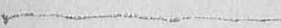
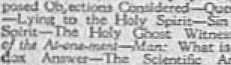
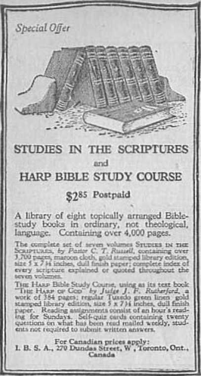

Why is Evil Permitted?
Judge Taft
Who Made the Devil?
J. F. R.
Why Does not God Kill the Devil?
Prophecy and its Fulfilment
Pl1££ Nineteen
End of the World
Fbit's Tutnlyihrfc
Immortality
Twenty
Where are the Dead?
Many
A Ransom for All
For
World Distress -Why?
Fj1££ RftHue ’
INTERNATIONAL BIBLE STUDENTS ASSOCIATION
NINE TH L A RSES ON BIBLE SUBJECTS
by
J. F. RUTHERFORD
Author of
"Out of Bondage of God's
“Can the Lit in<i Talk with the Bead?'
, "Mankind’s Subjects Living Will .Yfi'er Di*!"
PRINTED IN’ c. S.A.
Copyright 1S23 by
Bible Students
THE earth is full of sorrow; and every one has more or less huyna" ailments, pains and weaknesses, Crime is prevalent in every land; haired, ill will and malice are manifeststed without limit; and the question frequently comes to the mind of the one who is asked to consider the divine arrangement: Why fhould a just and wise and loving God pennit evil to be in the world and afflict the people so much?
Evil is that which produces unhappiness; and anything which either directly or indirectly causes suffering may be classed sis evil. The question is asked: Why did God permit Satan to tempt our first parents and causa them to violate his law? Could he not have prevented all this trouble, the fall of man, and the thousands of years of suffering that have been upon humankind? The statement that Jehovah is ull-powerful at once k-ads to the conclusion that he could have prevented it hud his wisdom dictated that he should do sc. The fort that he did not do so is sufficient proof that he permitted it for some wise and good purpose. When we we and uud<rstand the outworking of his great plan, his wisdom is manifest in all that he has permitted, and his love is ever manifest in the method provided for the restoration and blessing cf mankind.
God created the first man perfect, mentally, morally, and physically. As suggested in a discussion of this subject in Volume 1, Studies in the ScniiTWa, Page 119: •
“God could have made Tnanklr.d devoid uf ubllliy to div-cere between rijjLt and wrong, or aide only to dlweru and to do right; but to bare made him so would hare been to
«
make merely a living machine, uad certainly not n mental Image of His Creator. Or he might have made num perfect and a free agent, ns he did, and have guarded him from StlUlU's temptation."
Iii no other y>ay could man ultimately be brought to everlasting hupjiiaesH. He must be free to exercise his own will; uud be must learn to exercise that in harmony with the divine will, and to so exercise it voluntarily in order for complete happiness to continue.
God created everything for his own pleasure, (Revelation 4: 11) God has no pleasure in wickedness. (Psalm 5:4) There is no way, therefore, that he could so well teach his subjects the baneful effects of wiong-doing and the good effects of right-doing as by permitting them to experience these very things. Jehovah created man to be above all other earthly creatures, and endowed him with moral sense of discerning good and evil. Had his experience been limited io good alone by his being protected and shielded, from evil influences, then man would never have gained by experience a knowledge of the baneful effects of evil: but it would have required constant guarding of man at all times, which would have destroyed his free moral agency. The moral sense and the power to discern right and wrong, and the liberty to use this sense possessed by Adam, were important in making him the likeness of the Lord.
It is manifest from the revealed plan of God that he saw an actual experience with evil would be the surest and best and most lasting way to servo mon eternally; nnd for that reason he did not prevent evil, but permitted to an to come in contact with it. While God created the first man perfect in his organism,-yet the man was without experience; and experience can be obtained only by passing through certain conditions. The Scriptures,
' however, hifutm us tlmt when the activity of evil baa been permit!'d long rutugh to give n'-BU a full mid complete b--^ - n o£ its baneful effects. it will cea«e to be active; for all of God's subjects will be willingly submissive tu him and will follow lore and justice.— i t’orinthui'.:; 15:25, ^Li; Hebrews 2: 11.
But it may Le aeked: If ths Lord would permit evil to come tu utu? num, Adam, why should he permit Adam's offspring for thousands of years tn ft-1 the elk-ch cl it? When lit* iH-wii God’s plan we can see the economy of it and iliul wisdom and love prompted his act ion. Adam was put on trial iu Eden white he was perfect; and while in that condition he begat nu children. After be Lad vi-Juhd the Uw ami hud been ..-.nfenred to death mid driven from Eden, then he begat children, who were born and lived on the. earth- God arrange a that tins judgment of ojndumimtijn. should affect all of Adam's offspring, so that cna rvclcmpitive price would benefit all men. hnporfr it because uf sin, Adam vuuld beget only imperfect children. The IBible tells us: “Behold, 1 was ehapen in iniquity; and in sin did my mother conceive me." (I’.-altu •’■lijr “Vi hei ■ fore, as by one num sin Entered into the world, and death by sin; and so death patsc-d upon all men. for that all have sinned-" (lieirimis 5:12) God provided redemption ot njauhiiid by the sacrifice uf he other perfect one. Hud the judgment rv.-ultii-g from Adam’? viulutiuB mfected him alone, then i: ever Ada1 i get life ui uuj time thereafter he must be redeem rd by the ibni’h uf another perfect being, uud every uue of his offspring who would get life would likewise have to be r--!.-.med. Lt each one was required tu hare si tepante and distinct trial, then there would liuve Lu be a ‘- .parate and distinct r.<vemrj fur tacii one. Therefore Gud includco them
C World Distress—Why? The Remedy all in one judgment, in order that one Redeemer might purchase them all.
It wu' Jebjvtih'x purpose before Hie foundation uf the world to redeem man from the lauiditiim of death a' 1 ■,¥<; him a fair and impartial trial for life after in-had received hi.? full experknei.' with the baneful effects of sin. And when the world is put on trial, each one will l.iiov, sin and the results of yield lug to it; whereas A du r i uhi'tj iirsl tried, had not experienced these things. We lLlii properly siy that when Adam Violated God's law the entire human race vas in his loins, u □produced. The Lord, then, could niakv provision for the satisfying of tl: - judgment against Adam and all of bis offspring Ly another equal to Adam going voluntarily into dealt. The Lord made this promise through the Prophet: "J will ransom them from the power of the grave ; 1 will redeem them from death: 0 death, I will he thy plagues; O grave, 1 will be thy destruction: repentance shall be hid from mine eyes" (Ho^ca 13:14) The only way this redemption could be aeeomplisbeil was by the death of u perfect man, and in all the earth there was not one. ‘'None of them can by any means redeem his brother, nor give to God a ransom for him"—Psalm 49: 7.
Then it was that Jesus was transferred from the spirit plane to the human. being born as a man, but not begotten by any of Adam’s '-'lispring, ’When he grew to manhood’s estate he was perfect, mentally^ moralli and physically, had none of the contaniinatitnis of the Adamic stock in him, and was the exact counterpart of the perfect man Adam, who stood in liden, unscathed or unmarked by sin. Jesus had come now for the very purpose of redeeming mankind, as he slate-: ''The Nou of man came not to. be ministered unto, hut to minister, and to give his life a ransom for many." " i urn eoiue that they might have life, and that they might have it more abundantly.'”—Matthew 30: S3; John 10: Id.
KAy u Permiffcuf
The permission o£ the reign of fin mid den thoio in any years guve j>ut1icii-rnt time for enol gli to be bora into tin1 mirth ultimately to fill the w when they are restored to perfect huiinm cotidiiio and afforded maple time aud opportunity for the gro up ones to acquire an experience with the baneful effee of sin. AH those who have died in infamy trill get their experience during the thou Fund-year reign of Christ, during which they will be uplifted, They will acquire knowledge by learning what Lcppcred to others and by teeing the effect Upon ulhers in addition to ilieir own experience. The death of Jestu ra for the benefit of all. Wo read; “We tee Jesus, who w<*.* inndc a litrli? lower than the angc!> fur the suffering of death, crov. i.■ d with glory and honor; that he by the grace of Cod should taste death for every mau." (Hebrews ‘.’if!) Thus we observe it was the purpose of God that thu death of Jeans and his resurrection should provide u price sufficient to t^b-tii the entire Unit;an family—■ Adam and all of his offspring. This is in Inittuimy with Kt Paul’s statement: “Tins is goinl and acceptable in the sight of God uur Savior; who will liw all nun io ln> saved, and to wme unto the knowledge of the truth, bar there is one <«■■■!. and one mediator between Cod and men, the man Cbrisr Jesus; who gave himself a ransotu for all. to be t .{tiffed in due time/' (1 Timo thy 2: J’G) The order June maned is that first mankind shall be saved from the Adamic curse by the death of Jesus mid the presentation of the merit ul his sanr^cu to Divine JustiLie. and Hint subsequently al] jnanklud must bo brought to a knowledge of the truth and given one fair and imparthjl trial far life.
8 World Distress—Why? The Remedy
Another Teasou why Jehovah permitted evil was that it afforded the opportunity of developing from amongst mankind a New creation., which will be the highest and most exalted amongst nil of his creation. Jeeus is the Head of this new creation; the church constitutes his bodv members; and these, associated together in glorv. will be the instrument through which Jehovah will minister restoration blessings to all the human family. It has pleased the heavenly Father to develop this new creation through suiTering. (Hebrews 2:10,11) Jesus left the courts of glory, where he enjoyed happiness supreme hi his association with the great Jehovah God. Ite was made flesh and dwelt amongst men. He grew tip as a tender plant. Perfect in organ ism, he was a beautiful creature. For thirty-three and one half years he associated with sinners. Ue did not refuse to cal bread with publicans and sinners. Ur came in contact with the.->' because they were members of the Adamic race, and one of the purposes of his experiences on earth w us to acquire a knowledge of the sufferings which sin hud brought upon mankind, in order that he might be fully sympathetic in dealing with mankind in the time of trial. Of him the Prophet tays: “He was wounded far our transgressions, he was bruised for our.iniquities: th-? chastisement of our peace was upon him, and with his stripe- we are healed. He was oppressed, and he «u.- afflicted” (Isaiah 53:6-7)—all for the sake of (ring prepared to deal properly with humankind during his glorious reign.
It has pleased the heavenly Father to develop the of the body of Christ through experiences cl suifering, and that is why St. Paul says: “If we .-.utter, we shall also reign with him." (2 Timothy 2:12) And again he states that we are joint-heirs with Christ J i. . us, “if eo be that we suffer with him." (Eomaus
ttTiy tj SiH Permiiiedf t.
St 16, It) This tw-w creation, when completed mid gtarjt- ■ fil'd together, i-liiill lj-■ dm sped.’ i -i< mid J.i. *>f ilm Lori Thu Scripture sp' flk of i;r- new creation uh Ziem, cnucerruBg which the I'salniist Hmfr.*: “Fur ||i" Lord : ’*ji cho ■ is Zion; he hislh desired it fur his iinhitnt (Psalm 13!): 13) In Ollier word thr pew cn,..t i n will Im int'.'ting place between li'.-l mid man, It v,'ll constitute the great Mediator, I'rii. t and King. "I, hii'b Jesus is the Head ami C’ftirf Cbic. Jt will be the representative of Jehovah and the n I'Ksentativc of man, mediating between God tmd nu!i, bringing titan back into harmony with Jehovah. This is the dw that will be rewarded with ii heavenly bcm;-' and glory forever with the Lord.—Revelation 3; JO,
ifOut of Zi<m, the jwrfectiuri nf beauty. God hath sh ined?' (Psalm 50:3) Then th - Zion via:-.-, or new creation, of which Ji-m;:- is the J;:<i ■ ne, will teach all the people tba truth; first tho.-*1 living on earth at Jw time of the establishment of the kingdom. They will be taught what to tai and what io wear, how to uni ami how Co think, and idtove alt the priuciple? and laws of right*«ni.- nesr; end I14v hg had Li n E; 1 ■■ ■ 1.uj nue with evil, those who hate evil m d love righleauizras will gradually be brought buck by rciwitutmii j)races? to perfect! 011 nf body ami mind mid I curt. And this rm-tiiu-tion proevt? will '.'.''liinue for u itiiriod 01 o tliauEiyid years, viz., the period of the reign of Messiah, during which tunc every oim of Adam's dock, including Adam himself, wjjl have a fair and in . utial trial b.ir life under fnvtijnl'le conditions, h w ill then he •" eovc'wil that death has been a great enemy; but that while ihu people luave been dead, no one of the d«-ad In- been suffering. The 'LTpervni -■ ha.- L.-j) ga'i.*-d and now tha blc-sringts of life have come; and the restored (vpitk*
tion, seeing this, will give praise to God end his Christ for ever imd ever.
Thus we sec there are three primary reasons why God permit? evil: (1) To give mankind n full and Complete lesson in the baneful effects of evil doing; (2) for a sufficient length of time to afford opportunity io fill tile earth with people who get their experience I) font il.ei!' Until trial lor life; and (3) to afford opportunity for the development of a now creation, to constitute the instrument through which the Ijord Jehovah will minister file?sings to mankind, and who thereafter shall be the pride and glory cf Jehovah. lirH.ciiis^ of tire last it is said: “In the ages to come he J will] show the exceeding riches of his grace in hi? kindness toward us through Christ Jesus."—IC ph. 2 ; 7.
In view of the great plan of redemption jmd the ci-us-;.[neni institution of all thing* through Christ, ve can rhnt blessing? result through the permission of evil which could not have been so fully realized in any other way. Not only are men benefited to all eternity by th? experience gained, and angels by their observation of men’s experience?, but all arc further advantaged by h.x'firning fully acquainted with Gndfo ph?= reefer, as mtmifr-ri.'d hi his plan. They will thus behold hh perfect poise and balance—his wisdom, jo riice, love and power, working in exact harmony.
But why dl the war, famine, strife and Bolshevism, and other unspeakable crimes that the peoples of earth are now witnessing? Briefly answered, this is the reason: Silt;?n the r-vil mu* is designated in the Bible as the ‘hzoc 'if this world.” (2 Corinthians 4:4) “Re has been in control of the nations for many c until ri-?. God foretold ihi day ■ l judgment mi vengeapce upon Satairs cm ;u*d the ” it ions of earth, Wc have now come to
v
TFAy >'.$ J’rif PfrtnHtt■!'
11
the time <jf Jehovah'* jiidjrin’iit day <■( .....p .mt'? upon
the evil of the earth. This trouble in earth is spprt'iH'hin^ o great climax, which must taku place just before the beginning uf thu rcbtomiten bh'Hingn. Mankind is !''HV in tlml period of lusten funtlt'M by the Lu rd Je.'iu. retting forth the conditions that wmild eiint in the lu-t days just !■■. fore the blo.'Siug of mankind. The find world pas.-j-d niray-in a great ilood. Xot the present aril world te pan in# away in a great liery time of trouble, Cod’s i mlj^i nit ion upon th< evil system*. to he followed by a new griicr of thing? whflwin thvcllcth righkuur-ncis.—3 Peter <: 13.
Of tbifi time Vclun'" I. “Th?- Oivipo Plsttr of the Ages/ Studies nt tup Si'eui’Tfki*. p.iyfi It1! £nd 193, speaks f
“Close your eyes for :■ niomtiit to the nfjn-j; of ntlso-y □ nd Vt«; den ri1 dis 11nn Uftd sOrrOu' th nt yet pH-'i .it I Oil HlxXHJtlt Of Fill, U!.JJ piriuro t"'fori' yntir n:enl::l ' I.dull til* of th? in'rfitt uirth. Xoi a smh* of tnj,n> u.< (■□tiui-'Oj tin} petieo of :l perfect sacfery; out h bitter iboji|M not un tin-kind t>"'A it n-eni; luTP. fli hln; up fn<gj <'u<ry Ltort. meets a kintlnii iipponse in evrry ntht-r beort. unit benevolence tnui k- I'very net. Tti.-i*- fdekiu>^ ?JiirM be r.i niine: nut nn ache nut a ;ui!n, nor nny uvidi^cu nf dei .iiy run evki Hie fe.si ei .'ni<'b tilings. Think of nil the ptemie.- of iuht tntilva ht'Mlb i>t)ij beauty pf J ....... fonn qju] fmijr.' ilmt jun
Lii'ti-r-i'n, end knoa 11:.।r [~-rfoet hntnnnliy vrill l^'Of :■/Lit tnrpir'^nti? UjveEne^f. Tim Iiiirnnl purity .n d n..i;t;ii .ind moi'; 11 L.iTfi'cllrui will Slum [1 unit dorify '-verj f.lijini IV i/dmiLLT Sucii will earih’s inrii'ir bt*; tnul v * eptm; l-nmiifl or.f' win hnre their ti ..re nil wttn'd nwuy, ulnn thus they renlit.e i be tcjurrwlluu wvrli cw.njpteLfr"
"Thou art worthy, O Lord, to receive glory and honor (inri power; for Li'-u hast created till things, and fur iky pteciAure they are and teen created."—Eevelatiott 4:11.
SIXCE r>. i<l in th? Bible that all thing; were created by the Lord cud that oil of his works are perfect (Deuteronomy 32:4); and since we know that the devil is the evil cue, we feel sure Hint Genl wen hl not creak such a wicked one. Therefore we ask: Who created the devil?
AU intelligent creatures must be free moral agents with privileges of choorfng good or evil; otherwise the mature would !>■ merely a machine, compelled to do that for which In- was created arid nothing elfc, iJiuce free manQ agency leaves it to the creature to chouse the right or the wrongful retime, it is easy to ba scan how creature may m perfect at the banning and by choodng an evil course become a very wicked one.
Among the wonder fully beautiful creatures created by Jehovah was Luc’for. The word Lucifer means a bright and shining one, the moruiug star. Job record* the fact that Lucifer was present when God laid the foEindation of the earth, and joined in praise unto the gri-at Creator. (Job 33:7) From the description given of him by God's prophet he must imvc been a very wonderful and brmttiful creature, glorious in.his apparel. The Prophet. =nys; "Thon hart hern in Edan the garden of God; every precious stem: wa< thy covering, the MrdfizE, taptt', end the diajnimd, the beryl, the onyr, and the jasper, the sapphire, the emerald, anti the carls
buncle, and gold: the worl::tiu:iship the ’ i' :-1 of thy pipes was prepared in thee in the day that tii/m vast created. Thou art the anoint',d cherub That eth; and 1 hiivm=ei thee so: thou wast ujh’i.i lIj- holy mountain of God; thou hast walked up and dov. :i ■ । -'w midst of the stOMfl of lire. Thou wust perft :t in thy ways from the day that vhou vast created, Lill i-hpity was found in thee?'—Ezekiel 128: 13-1-5.
Thus we see that Lucifer was created perfect- He is called the anointed cherub, which si leans one iiainiig authority over ethers. This scripture states Unit he was in Eder.’, and this together with other scriptun - indicates that he was made overseer of Adam mid Eve v, L--ri they were created and put into Eden. When God cri-at-d man he gave .Adam dominion over the things of the earth. While Lucifer was very greet mid beautiful Li> did not possess a donuniaii. He had ambition in his Iiaai i to have a flnnnnion, and he rJwnr. to acquire such. To accomplish. this lie d'.-njEi. d uioiii'.T Ev.1 by d'i be rarely lying tu her. In sulnhma' he Luld fe that Jehovah was trying to keep her and her li inland in ignorance. To accomplish. his purpose he operated through the serpent, one of the bca-is in Eden; paid speaking 11 -hi'l'Ii this beast be said to Eve: "Yea, hath Ged said, Yr- shall not eat of every tree of the garden'f And Ev replied: "Qf the fruit of the tree which is in the midst if the garden, God hath said, Yo shall not cat of it, licit be r shall ye touch it, lest yu die.” And to this tin: reply was made: *‘Ye shall not surely die; for God doth know that in the day ye eat thereof, then your eyes shall be opened, and ye shall be as godsj knowing good and il," --tenesifi 3il-5-
The e\ideut purpose here was to cause Eve to be dWl loyal to God and through her to get control of her hus-
bund; nntl Aduni and Evo having the jwwer to produce children anil populate I he earth, Lucifer intended in this way to get control of the human race and establish a dominion of hrt own. This was an evil course. It was disloyalty on his part to Jehovah; and for this reason he fell from God's favor.
The Prophet describes him and his fall thus: “How art thou fallen from heaven, O Lucifer, ton of the morning 1 how art thou cut down to the ground, winch didst weaken the nations! For thou hast said in thine heart, I will ascend into heaven, I will exalt my throne above the stars of God: I will sit also upon the mount of the congregation in the sides of the north: 1 will ascend above the heights of the clouds; 1 will be like the most High. Yet thou shrdt he brought down to hell, to the aides of the pit.”—Isaiah 14:18-15.
Jesus raid of Lucifer: “I beheld Satan as lightning fall from heaven.” (Luke 10:18) He fell from God’s favor. He was degraded and his name was changed; and theTcafter he is known in the Scriptures as the dragon, the old serpent, the devil and Satan.
Every creature named by Jehovah is named for a purpose, and the name signifies much. The word Satan means oppose?. In Eden he was the opposer of God and bus been ever since, and the oppose? of everything that is righteous. He opposed Jesus when our Lord was on earth, operating through various agencies, and has opposed the followers of Jesus ever since, causing them to be persecuted. When God expelled Adam and Eve from Eden he stated: ‘T will put enmity between thee and the woman, and between thy seed and her seed:
and it Khali bruise thy head and thou shall. bruisn !ii.-heel." The seed means the offspring; and thereafter Satan and his emissaries or offspring have persecuted all those who have followed righteousness. The teed of the woman hero pictured tho seed emanating from the Abrahfimic covenant, which seed is the Christ (Galor fians 3:16,27, 29) Satan has always opposed this seed, and this explains why true Christians are persecuted.
The name serpent meant deceiver; and one of Satan’s favorite methods at all times has been deceit, practised upon the people. By meant of fraud and deceit he has gotten false doctrines into the minds of the people, blinding them to God's true Word.—2 Corinthians 4: 3, 4.
The word dragon means devourer. Satan has sought to devour everything that is righteous. 11c caused the prophets to be persecuted and killed. He instigated the persecution of Jesus at the hands of the Pharisees; and his attempt is to devour everything that is righteous.
The name devil means slanderer. Satan slandered God in the garden of Eden; and all the malicious, slanderous accusations against the Lord and his followers from then until now have emanated from this evil one, .Jesus speaking of him says that he is a liar and the father of lies.— John 3:44.
God established with the nation of Israel the true religion, commanding that they should worship him as the true God. Satan the oppeser established with tho heathen nations round about the false religion, causing the people io worship him, images aud demons; and from this source spring all the falsa religions. The Lord established the true Christian religion, and Satan thereafter established the mystery of iniquity, the faithless religion, claiming to worship God and at the same time misrepresenting him and misrepresenting the Lord Jesus
< hri.-i. ‘Jluik Th*? Scriptures prove that God did not create iSfliniL He erented Lucifer, u perfect being, who alter-waul i ■.cjsne Satan i.s-;au=e of hi= own wicked course.
!■'['.mi Admit until the flood God permitted the angels li'‘iiv<i:i to have supervision aver nitw. Satan seduced n a! iy of ii esc angels and caused them to debauch the hiiiiiun ........rid turn them all to wickedness; and so
terrible did the wickedness become in the earth that all aside from Noah and his family were steeped in crime and wrong doing. Every imaginations of their thoughts was evil continually, Jehovah brought the great deluge in 1656 A.M. and destroyed all the human race except Noah and his family, who found favor in God’s eight [iii<| were carried over in the ark. Th— i evil angels that S.:\i!i Sit'd *,,:lu' vi) God restrained until the judgment .. ■!.•••:• r day. (Jude ; 3 1’cior 2: 4) After the flood lh>- i.ord begun to people the earth again through Noah; ui..I hi due time formed the nation of Israel as God’s chosen people Satan opposed at all times.
Explaining the inachinations of these evil spirits ance th.. (hi>>d, Volume 6, “The New Creation,”’ Sttdles in the ScaiiTUKEE, page 680, says:
“While chained, or imprisoned, in a live sense of buiog un-able to appear amongst mtn In bodily bodies tlcy had control in the depraved, unclean mediums who were willing to submit themselves as their agents, or mi'dlunis, and they inspired through the bodlee of the dead instead of bodies of the just. Such 'mediums' were human channels of communication. i.e., the demons and mediums.
The evil angels or evil bpirit- that had been, restrained and were no longer permitted to materialize amonget tr.cn under Satan’s direction established communication
with willing ones of the human race on earth through the instrumentality of mediums. The Lotfi jirovided iti his law that the Jew- should keep aloof from thosi who attempted io to communicate with the evil ones; imd £rovided in his law that all spiritist mediums dionli!
i put to death. But the nation of Israel fell into temptation time mid if me again; and finally Satan was the cause of their overthrow. He caused the prophet* of hunel to be put to death, He also caused the wars am I famines and trouble mid strife that hare filled the earth from then until now.
Seeing that Satan is the author of evil and the instigator of wickedness in the earth, why does God permit him to live? Why does not God kill the devil?
Here wo give a brief answer. God purposed I hut every one of hid itiieUigeuL creatures should lutve experience with the baneful effects of evil, mid that they might choose between good and evil. He decreed long centuries ago that Satan should be put to death, but he has withheld the execution of ibis fentenco until a sufficient number of the human race has bretl brought forth to till the earth; and ihtse are given experience with in order to see the results thereof, in order that when being brought to a full knowledge of the truth and with a full opportunity io du right, they will choose righteousness and live. God in his wuduin hus provided this means of teaching the human family that utiibi lion. EelhHhnets, uud Wrongdoing lead io deg radii t ion; and that humble obedience to the Lord and following after righteousness lead to exultation.
In no other way could God have to thoroughly demonstrated this lesson than by permitting Satan to carry on his nefarious work The two characters that are eoutissted in God’s great plan are Satan and the Jjord
^8 JTcrid DtJfmj—4VAyF The Remedy
Jesus. Satan meditated a usurpation of God's authority, was degraded, lost hi* high i-has I.....tile tin-
every person that is in him, and deceived humanity that ( and will be totally deprived ccharacter can go into wickedness: and be will iu due time be de*lrayed,
After spelling the subject at length. .Studies in The Scriptures iiBsr, Volume 4, page 190, sayi;
‘Satan is to be bound limiting every deceiver and misleading influence will be restrained so that evil shall no longer lure men to be more and more on the side of evil and unendurable.
irutii i-I.jH do Imurer apj'^nr to tm-n unirtii- nor fulw hCnnS I- to appear true." hNot only will rln? klii£-
di'jn Ik* rPiul>;ht.nJ ibLr'i torn-, and be u power IIjjt met: even to resist, Lut it will so euutLuue thcoughtnit ’lie entire
millennial age; fur the entire reigu is fur the *]nvLUe pur* jib h-. ■/ T'mnini'li.iug tli“ ei.enili'S of risiit'.’iu^r:—.. "
1'ti- apostle Pau! plainly sayi that Jesus partook of flesh and blood that through death he might destroy In' ■ lliat hiiili t},.j |i,v>iir of 'lriii.li, lii./. i‘, th'- devil. (Hebrews 2:14) After all the human family has been given a fnil opportunity to know good and evil am! to choose the right course, and all who choose to follow him in uh righteous its* will be Kunpldely ami fore ver destroyed. Jn thi- v.t- .. ■ the ni.uiifold wisdom of Jehovah uud hiv loviugkiudij'-ij toward those who lore righteuiL-uees.
THE Bible abounds with proplietie statements. These are called dark sayings, because not under-atandable by man ar the time wjhen written.
Prophecy means the foretelling of events that are expected to happen in the future. When these events do occur and are recorded, we call it fulfilled prophecy or history.
No human mind could clearly discern what the future will bring forth. Hence we must conclude that prophecy proceeds from God and is written for man's instruction, to be understood by him in God's due time. The Apostle states: ‘Tor prophecy came not in old time by the will of th am ; but holy men of God spake as they were moved by the holy spirit.” (2 I’eter 1:21) These men really acted as the mouthpieces or amanuenses of the Lord, to speak or record prophetic sayings.
The fact that prophecy proceeds from Jehovah is proof conclusive that a time must come when that prophecy would have fulfilment, for the reason that the great, all-wise God would do nothing for an idle purpose. That we might be sure of this, Jehovah caused his prophet to write: “So shall my word be that gocth forth emt of my mouth: it shall not return unto me void, but it shall accomplish that which 1 please, and it shall prosper in the thing whereto I sent it.”—Isaiah 55:11.
To illustrate this point we give some ovnifijiji-s of prophecy and their fulfilment. Through his holy prophet God foretold the redemption of man. (Hosea 13:11) He- foretold that this mighty One who would come to earth would be born a Jew, (Deuteronomy, 18: 15) Hr
sps iifiisi the ] ! ■ -.iIj-'-i- h<> ■.■ ..tt’d be burn. (Micah 5; 2) H-- foretold. ii.;.' lie wutild votes! to hLs awn. people; that th.-Y should not receive him, (but) would despise and reject him; cud that In* Mould i.i- a man of sorrows and acquainted with grief. (Isuiirh 53:1-8) He foretold his friLE.rli:iL‘. eTiiry into Jcrusabmi, offiring him.sclf aj King to the Jews. (Zs-thariah 9:9) He foretold his Letreyjil (Zechariah 11:12), and that he would die, but nut for hit! -elf (Daniel 9:20); that there v.ould be no just cisurt- for his death, Lot uatwilhstattdipg he would be tmrtibcred with the truingres&ws, (Isaiah 53:7,9) He fore told that he would di» a violent death, and yet not a bone of his body would be broken.
Every student of ths Bible know- that Jesus fulfilled all ■.! tb-s prophetic statemeutE caused to be written by his Lord Jehovah; that Bloses was a type of him; that Ji'.ilis WQ;: born a Jew ; that rn: was born at BethJ$-I'.ciin ut foretold ; that he came to the Jews mid offered himsolf as King, which iulTilmeiit i* upt^ifically recorded in Matthew 21:1-9; that he was rejected and crucified; and that he bi'ciinie maul-- ReJeemfir,
Through 3E'- , God fore’old the overthrew of the nation of Israel. (Leviticus SG: 16,31.32) Again he foretold Israeli over threw through the ]>ropliets Huckfc! and .!■■ leuiuih. Th1 ptophwus were fulfilled t.xaetly on time, and th- Jews willed from Bules Line,
God foretold through ih<i prophets the time of the end' I'arlieuIitTly through Uaniel he said: "But thou, 0 Daniel, shut up the words, and seal the book, even to the ti !:-■■■ of th', cud; nmny shall run to and fro, and knowledge shall be increased' (Daniel 12:4) This we flow see in rouh'.' of fulfil tuent.
It is interesting to know that many centuriti ego the L-jrd through his j'luphrt Xalium. luretold mid gave a description of a railway train in full operation, drawing thet that would, take plate at a certain tiw. Till* prophecy baa now been fulfilled—See Nahum 2: 3-6.
Volume 7, “The Fun lied Mystery Studies in the Scriptures, page 93, descriptively interprets the symbolic language employed by Nahum, even tn the sitting of the passenger* in tbs aide* and to the condimiur vnUectiug ticket;.
The airrhip, now generally in us? amongst the naticma and j tuple a of earth, <;..dV prophet foretold many centuries ago. The wireless telegraph, which now is ur'J throughout the earth in prorlmessagesg nic.-.-Bgea, God’rf propbi't likewise foretold many centuries ago.—Isaiah 60:8; Job 38:37.
There are many other prophetic utterances in the Bible. umuy of which ure now in co urn' of fulfilment Tubpuriajit among these is the World War, which was predir ted in Volume 2, "The Time e- at Hand," Sirr-1£$ in the ScaiFnrHEs (written in 1889), to begin in 1914. We quote from pages 53 and 79:
“The Times of the Gentiles” was ajiplicO Ly uur Lohl m that Ini tial ci earth's Luxury between the tvrnuml of tlji-tiltliwl kingdom of God. the kingdom of flesh, and the combination of civil and ecclesiastical power of its fulness, tiic (rue Idngdvin ol Cod."
“The Bible erldeuee Is clear nuj strong Umi the 4TLi;>.,.i of (he GeutHts1 Is a fterlod of 252i> ;>■..[>, from the ytur U. <'. «wj tv and Including A. 1.'. nil"
Others which may now be discerned by tile atudent <jf the Bib* are: The end of the world, the secund <xnni:i;; of Ciiritit, the disirern ui the nations, the biilUe ui’ Armageddon, the new world beginning, etc. This. we
may see Lhut God foretold tin hlitciry of the world long ngo; and tin ■ jn-Jul student ui prophecy nuw. iu ibi' light l ' hi.-tury iiml mnb that are daily transpiring, t'lin have n dear vwfoll of the inti.....Jg of the-'.' '.Lings.
The Bible i- the most wonderful book written. It b the liii.-t hipL- i .•-.-..-■..■J. There is now really t.o e.-.-.n.-.' for nui tfndirs tending the Scriptures. Every home should he supplied with Bfljles and Bible helps. As the children, from the time they k-gin to rend, should be encouraged 1" study the Bible; for it holds a plain layout of God's plan of Salvation that ’.'. ill bring Life, heal lb and ha p pine -s to the human race, end there is no other means whereby they can get it. The prophets lurch Id th- time when the Bible would be better understood. We have now come to that time. All parents should therefore inform thenLseke- loueerning the Bible and *T'ijJd jsrform their ibligatii'ii toward their children to piopedy tenth them its great truths. There is nothing that u institutes such u safeguard against tin-many evils of the present day as a knowLdge vf Gadis Word of truth aud hi - means of bk -. ing mankind. The very purpose of the Studies in the Scriptures. The Divine Plan of the Ages, and similar literature published by the Intern atnnuj Bible Students Association, is io enable the people to instruct themselves concerning God’r Word.
FOE Almost nineteen hundred years Christians hate been looking for the coming end ,of the world. 1. ■■ ■' before that time the Jews had expected the world to end; for their prophets had taught iheui thus. Many have been erroneously taught th tit when the world comes to uu end the earth itself and all that is in it will Ue burned up. This belief is due to a lack of knowledge of God’s Word. It would seem unreasonable that .L-ho-vah we aid create a great earth like this, and can.-c it. to be improved, merely io destroy it. If there could be uny doubt in one's mind the Loid has settled that rh row Hi his prophet when he said: "For thus saith the Lord that created the heavens; God bmis'-if that formed the earth, and made it: he hath established it, h* creutr-d it not in vain, he formed it id be inhabited.'' i. Isaiah 45:18) "The earth abideth forever,"—Ecclesiastes 1:4
By the word world as used in the Scriptures i.s meant the order of society, which is sometimes called civilization. it means the order of things visible, a ■ relates io man, his method of government, etc. The Bible speaks of three worlds: (1) The world that was, which being overflowed with water perished 2 Peter 3:6) ; ( 1 i ' ‘ present evil world, which also is to be dcstruycil i/hilii-tians 1:4; 2 Peter 3:7); and (3) the "world to come (Hebrews 3:5) The first world or order began with the creation of man and ended with the deluge or jIixhI. It was administered by angels, as the Scripture says, With the ending of the flood began the second age This has indeed been, and is, an evil World, h is the cud of the "present evil world” with ■*• hick the Jews
S4 For —TFib JIf The Remedy
were concerned and which Christian’ have been anticipating for many- centuries. The “world to come/ “wherein dwelleth rightecrumtia ” is the order of tilings in vhicli Jlesiiidi the Chrkt reigns in right ecu snees.—-Isaiah 13:17; if Peter 3:13.
Chi i’l left no doubt in the mind of any one that his kingdom titles not vine during the present evil world; for wh i: he talked to Pilate he said: “My kingdom is not of this world.”" AgUill he spoke of Satan uh the “griner of this world”; and the apostle Paul refen to Satan .!■ the “god of this world/*
Puri) g the evistviice of this evil world honest
men liuvc struggled to establish u righteous government on earth mid to bring about man's lung desire; utuneiy, life, liberty and happiness. There has been much good in this world; for many men have striven for righteousness ami truth. Evil has prevailed, however. During this time the proud liave been set up. and might has made right by man.—Malachi 3:15
The Jews were interested in the end of the present evil world’ lb y expected the kingdom: tli-.-u
to be irtablishEd and the people to receive a blessing. The :'in-tian.- hitvi looked wr it because Jenn taught them to pray: '‘Thy kingdam come, thy will be done on earth a* it u done in hn'aren.11 (Matthew 6:10) Xaiuraliy. then the true students of the Scripture would h.i watching and waiting far the coming end of Ujc evil world mid the magnification of the new. Jesus indicated what will occur td that tune, lie spoke in prophet io huguagc in answer to a question propounded to bon,
Our Lord’s disciples approached him ami said: Master, tell us what riiall be the sign of thy preseuii* and of the end of the world?*' (Matthew 24:3) Jesus
answered this question in prophetic language—Indeed, that is to say, his answer foretold what would occur when tie world should end; and for this reason his answer is particularly interesting in the light of present-day events. Before noticing his answer let us consider briefly some chronological features of GodV prophelit; statements to show about when it might be pjtpeetod that the world would end.
The Jews were God’s typical people: that is to say, he chose that people and organised them into a mition. gave them his law, and used them to foreshadow events to transpire. (Hebrews 10:1; 1 Corinthians 10:11) Because the Jews violated his law. God time and again warned them that he would east them oil and permit the Gentiles to take them captive and establish a world empire; and that their punishment thereafter should be for a period of seven symbolic times, These seven symbolic times and the period of time in years is explained by Volume 8, ‘The Time is at Hand/’ Studies ik tub ScaiPTUBis, page 8’1:
“In the Bible a ‘time’ is used in the sense of a year. . , . Cimwiueoiiy, . . - sgveu ‘times" represent 2530 . . . literal yeans."
'J’he Scriptures plainly show that this decree of Jehovah was enforced against Israel in the year GOG B. C., and that there Nebuchadnezzar became universal geciije ruler. Counting 2,520 years thereafter would bring us to 1P14 A. D.; $nd calculating exactly, according to Bible chronology, the gentile times would end August 1, 1914. That date, then, would mark the end of the world, when events should begin to occur, thus indicating its end. Jesus foretold what would happen then by r-aying that the nations would become angry and God's wrath would come.—llevelation 11:15-18.
Cfl TTarfd ZKjIwj—TTAy? 77ir Ufmedy
Mow mark llv fuiiiliuent of the answer of Jesus to tLi> question: 'Huw may we know when we have come to the end of th'.' world?* ''Nation shall rise ugttiuet nation, and kingdom against kingdom." The World War began exactly on August 1, 1914. Um end of the gentile rimes, which marks the end of the old order, Jtfiis said in this connection'. “And there shall be famines, and pestilences, and earthquakes, in divers jiljiu-.-r. AJ] these arc the beginning of sorrows," By this we undt-r-mi d that ths events just described would ninth the beginning of the sarrov.s upon the peoples of earth, which would culminate in greater trouble later. Otherwise stated, August 1, 1914. marked the beginning of the Dii'i'F proceedings; and the Lord is pro-c-.'idirig in his own majestic way in destroying the evil th logs of this world tu make way for the c?tab I irhin ent of hi.' kingdom of righteousness.
The World War was followed by famines in many parts of Europe, Asin, and Africa. It was fallowed by the great pestilence of the inlluetizu, which killed more people in one J cur than the war did in four. Thera hove been more recorded natural earthquakes in the earth in ths last four years Umi in any previous period of earth's history. And since earthquakes symbolically represent revolutions, them* Likewise have marked this period, many nations having been overthrown by ro volution,
The Lord foretold through his Ward that God's favor would return to the Jews at the end of the world, and that they would be icgutU-rod tn Palestine; fl’id this rtoph'-icj' we now sec in course of fultiimcjit.
Furthcnnore, th>* Lard chavn-d that there would be a great falling away from the faith in Christ Jesus, and
that s-o mailed Ciiriblinnn would be turning to thingn other than the Word of God. And thus wo esc this in fulfilment, us well a- .......y other things that the Master
mentioned in this wonderful prophecy, which space will not permit us here to dheuss at length. The Lord foretold general troubles, labor troubles, strikes, lockouts, profiteering, Bolshevism and anarchy, as further evidence, of the passing away of the old order, preparing for the new. Them general signs which arc apparent on rrory hand are siiMaidsated by their occurrence in time predicted. Volume 8. Studies in the Scriptures. “ItiE Time nt Eond," deal- in Bible chronology and makes today'.' events doubly significant became of their occurrence in tin' year predicted. Lt is further substantiated in the scientific measurements of the Great Pyramid of Gizeh in Egypt This is dealt with fully in Volume 3, "Thy Kingdom Come," Siu uses in the Scainoze.
WHAT i- iiit'iiiit by immortality r Does every pcr-kuj an immortal will ?
The btil le-’dcegrnpbcTS define immortality thus: 'I'hii quality or stale oE being ttumortul or ('-tempt from di-iiili and annihilation; an unending extataure. To be immortal mffln= that one canno: die, but mu.-t live forever. It menus that -nth an one 1 .;- .l uevEr-pndtag e.videnc’. If etiuy perron ha- an immortal -■<nl. it would mean. then, that the soul is ce Ageless, perpetad, cxmliutul, taiperithable, incorruptible, deathta.-’. awl not subject to death. Th!' Suriptiirea agree with this definition of i i mortality.—Re vetat ion 2 Q :d; 1 Cor in Lhian.“ 15:5-1,55,
From cur youth we have been taught by our religious tcacher? tlmt every num pw-ejses jin immortal wul. Ih this true or not? The Bible is the only true source of k’l-nvJcrjge upon this question. The thcorie- of men are of no siitae ttaiiess they are ba:. ■ upon compclent evidence coming from a truthful wurce. The Bible is (tad's Word of truth, (John 17: 17) Any question that in arswi'ji'd uiitrL. . to the Bih!< cannot L? a true misvror, it matters mil who gives it. The Scrijdutes state: “T« the law and to the testimony: if they rqienk t.n: according io this ord it h becaw'' there is no light (truth] ir: them." (Isaiah S: 20) Again, we read: 'JLr‘-t (tail be true, but e\iiy muu .i liar." (Romans 3:1) livery huiicst t er sou dr-ires (In- truth. TheH? questions, them we diDiild answer a .cording to the truth, according to God's Ward.
Before we can determine whether or not man pteweses an imiti'irtal Riul we tutisv first detarmina what h the 3& foul, The clergy say that the soul of man ;■■ +:u- ii< . ii.i-pari of him which cannt't die. They cite no Srrndurul proof of this, however. The Scripture de lines a soul as a being, a breathing creature. "The Lord Gor funi-'d man of the dust of the ground, and breathed into his nosrrik the breath of life; and man became a Jiving soul.:J—Geneeis 3:7.
It must be conceded that the dust of the ground out of which God formed man was without life or consciousness. The breath which he breathed into his nostrils was not conscious. But when Jehovah made the body out of the dements of the earth mid then united with it the breath which living creature- breathe, thiz start'd animation. That pur to work the machinery, and the result was a living, sentient, moving being, a soul. The words soul and being arc- synonymous terms.
Every creature that breathes is a soul Mo meatura ™sesse6 a soul. Every animal is a foul. Ent no ohj would contend that an animal dofsc-^cf a =oul. The tfo .] aairt God applied to lower animal- long before ilu erection of man. (See Genesis 1:29,30, margin) Aiiain w? read in God's Word: "Levy e tribute unto the Lord of the men of war which went out to batik: one soul of five hundred, both of the pert on =, and of the : ■:■■■'.■.J. mid of the assos, and of the sheep/' (Ntimbers 31:38) The reason the Scriptqrea designate animals as souls Is that they arc ell breathing creatures. Man i- the highest order of animal.
The proper definition of soul is, then, any cleat uro that breathes and possesses the tense-’ of sight, -iui'U, etc., and uses them. Mun if a soul. Mau does not pcizsess a souL For instance, wo say that q man :i. ■ a cow; but not that man is a cow. Man is a soul. M iu does not pastes a soul.
When creature die, they all go to one place. 'Ilie difference between man ai:d the lower nnrmql^ Is that fur the lower animal? there i? no hereafter; while God hn.s provided by redeuipticni tuid resurrection that man r-balJ live again. Thu Scriptures shite: ‘Thai which befall ctb the sons of men befalleth beauts; even one tiling bcfalfeth them: aa the one db-th, to diuth the other; yeo, they have all one breath: so that a tnan hath no precmi-nence above a I- art; for all is vanity. AU go unto one place; all arc of the dust, and all turn to dust again,” {Kcelesiastcs 3;Ifl, 30) God said to man when in Eden: "'iif the tree (if knowledge of good imd evil, thou th alt not cat of it: for iti the day that thou cutest thereof thou .-halt surely die.” (Genesis 2:17) It was the iduu. the soul, the being. to wsom God addressed tl?.?e words. If man hns an immortal ±oul. then God’s words do not mean what ih.-y &jy. But we know that Ged does mean wbut be says.
The dnrgy who have taught that the soul is the spirit-ital tiling which was rot =enleu«d to dentil, and which Canmjt die. are flatly contradicted by the Scripture We read: “The re ml that uiimeth. it shall die.” (Ezekiel 16: 1) 1J\Vkii num la he that Uveth. and shall not ree death? shall !.■■ deliver hi? soul from the hand of the grave?’’ (Pi-alm td>:16) Th-.,-.- re rip Lures prove that the rfjul dies. If it di-.'i, then of fiombc it cannot be immortal. alm: is a reuL Jian was tienfcnccd to death. Han die.-. The soul dice. Therefore man dues not possess un immortal soul.
There i- a didinefion between living forever and jiumorfidity. A creature that ^uiild b--' always obedient lo G<d and in hm mouy with him Uilght be per mi tied to live forever. If a creature is immortal, not even God could put him to death. The Scrip:are5 chow that God
stilit f’-jnrer to destroy the ,-ntiL Jctus: .-aid: “Fear him who is abb- to df-lroy b"t'n hjd! and body” (Sluttliew Ui.it ir= in bay. God [!■■.• .-• .--.• the
pon er tn destroy inmi'f body and hit very rxiiltfinT, *titai he may nmr live again. ‘Hr- tlisproirs the immortal Uy theory.
Tii> rv if rir.it one Mriptiire iu the Bible tlmt dcrinw* man is inherit, Lly immortal. If any one tell- yo'J that the Hilde teaches that all men have iiriuit'jtol -nils., .i.4. him to cite one scripture that su stati>. Volume b. Studies in the Schiutvres, page 47. states:
"Emi mining llu.'sc atjonjjird wi>rks, wlml ilu „■■ lindr Till ■: timt Hi" Hebrvw wonl nephesh, which is generally rendered Soul, . . . is Irnjuliited in ihlrty-^T dilTcrvnl w;ij> , . . The Greek word psyche, in the New Testament, o£ tl," Sew Testu-ineni . . . !s translated 'Sinti' lifij-sds; rum :.; Is olsv trnus-Interl Talii'J' three Umeiii ‘hejirt’ once; and ‘creature’ forty-one times,"
If the Bible, then, teaches that man is mortal and not immortal, from whoni r1 did rhis doctrine of inherent immortality originate? 'I'he answer is: Saiun the (teul crigionted it, .net it i,t the fir.-t Ue Over fold; und fmm this "rent lie nil other false doctrines have sprung I he doctrine origiianting in the following manner
Adam and Eve were in Eden, having given dominion over the tilings of Eden. They had the right Then lire if they remained obedient Then God (God said Then Adam “In the day that thou eatrat [of the tree of knowledge of good and evil] thou shalt surely die.” (tTei ■ sis '.’-'i I Satan practiced a fraud upon mother Eve. He implied Then her that ■ that it would withhold from her from her and
her husband knowledge that they would gain by eating of the fruit, He said Then her: 'Why ito you eat of this fruit?’ And Eve replied: "God liath -aid. Ye shall nut mt of it, neither shill ye touch itf lest ye die." Then
inis Satan replied: KYe shall net surely die; far God doth know that in the day ye eat thereof, then your eyes ■.hull be opened, and ye shall be Tn- wiee] ns gods, knowing good and evil;" (Genesis 3:1-5) This was a lie. because a direct contradiction of what Jehovah had fold them. Referring Then it Ji-sus said loncentmg Satan: “He was a murderer from the beginning, and abode not in the truth, beeausa there is no truth hi him. IVben. he speaketh a lie he speaketlr of his own; for he 1= a liar, and the father of it."—John 8:44.
From that day until now Satan has blinded the minds of men by inducing them tn believe that the soul of man is immortal and that man cannot die. St. Paul says of him that he blinds the minds of men lest the truth shine into their lives.—3 Corinthians 4:4.
Since immortality means th ar which is not subject Then death, who then is immortal? The Scriptures answer: ‘’God only hath immortality?’ (I Timothy 6:16) God ifi the EJelf-esisting One, from everlasting. When Jesus was on earth, ha was not immortal; but immortality was granted, Then him as a great reward at his resurrection. He said: “As the Father hath life in himself, so hath he given Then the Son Then have life in himself.■' (John 5:26) When ho arose from the dead he -aid: “I tun he that liveth, flud was dead; and, behold, I am alive for evermore.”-—Revelation 1: 18.
The devil himself is not immortal; for the Scriptures plainly state that in God’s due time he will deaf toy the devil.—Hebrews 2; 14.
Immortality is a great reward offered only Then these who arc overcoming, faithful Christians, and who par-tjeipate with Christ Jesus in his resurrection; and it will he possessed only by them. There is a wide distinction between men in general and those who become
the full step followers of Jesus. All men are mortal; therefore subject Then death. The apostle Haul plainly givs; Tn Adam all die.'* (1 Corinthians 15; 22: ’hen the Apostle plainly points out that immortality is a reward for faithfulness. 11c- encourages the Christian Then seek immortality. (Romans 2:7) If a person inherently possessed a thing ha would not be seeking if. The apostle Paul, then, addressing himself Then the consecrated Christians who prove their faithfulness unto death mid whose reward is promised Then be heavenly, says: “Ite dead shall be raised incorruptible, . . . for this corruptible must put on incorruptible, find this mortal must put on imortal‘iy. So when this corruptible shall have put on incorrupt ion, and this mortal shall have put mi immortality, then shall be brought Then pass the saying thatt is written. Death is swallowed up in victory." (1 Corinthians 15:32-54) it must 1-? manifest tn every reasmuiblc mind that if every man possessed inherent immortality, then this statement of St. Paul equid not be true. We know that it is true; for he wrote under inspiration, lie shows that immortality is given as the greatest reward.
These words of St. Paul are addressed not Then the world hut only Then the consecrated Christians. Then such Jesus said: “Be thou faithful unto death and 1 will give thus a crown of life." (Revelation. 2:10) The crown of life means the highest state of life; hence the state of immortality, that which is not subject Then death. Again. Jesus said of those who partake in the first resurrection, the chief resurrection, that over such the second death’ shall have no power,—.Revelation 20: fj.
God has always been immortal Jesus and his church arc granted immorality; and no other creatures in the universe wit! ever be immortal.
The word pcris/t is defined by Webster mid other lexicographers as follows: Then bo destroyed; Then pass away: Then become nothing, Jesus said; "God so loved the world, that he gave hi,- only begotten Son, that whosoever believe th in him should perish, hut have everlasting life?1 (John 3:1G) Plainly the condition here is that everlasting life depends upon faith in the Lord Jesus, and that all others do perish. They could not perish if immortal. Again Jrsus said concerning his coming: “I am come tluit they might have life, and that they might have it more abundantly." (John 10:10) If a soul is immortal, then of necessity it would possess life, and the coming of Jesus and his death and resurrection would not Im necessary Then give them life. Hence it is sewn that the theory of inherent immortality is a direct and positive denial of the great ransom sacrifice. Satan desires Then blind the people Then this great truth; for there is uo other name save that of Jesus whereby men can be saved.
Nothing is more clearly taught by the Scriptures tliun the resurrection of the dead. If loan is inherently immortal it would mean that he cannot die. And if he is not dead there could be no such thing a? a resurrection. Resurrection means n restanding Then life, or a recreation, or a bringing back Then life. The scriptures above cited show that all men came under the condemnation of death; and that it is the soul, the being, the creature, that dies. Referring Then the dead, Jesus said: •'Harvel not at this: for the hour is coming, in the which all that nre in the graves shall hear his voice [of the Son of maul, and shall come forth.’1 (John 5:2S,2!>) Then this St. Paul adds: “There si tall be a resurrection of the dead, both of the just and the unjust."—Acts £4:10,
Jesus died and rose again from the dead. He so stated hini-df. (Revelation 1: IS) His resurrection is a guarantee thiit all tlv." dead khal! be awakened out of death. If immortal, thiy would bo impossible. because already alive. For inis reason many deny the resumctfcn. Then meet their argument St. Paul said: "If there be no resurrection at* the dead, then !■■ Christ not risen; mid if Christ be not risen, then, is our preaching vain, and your faith is also vain. . . . Then they also which are fallen a "kep in Christ are ; ■■-'-1.■ <:.*’ (I Corinthians 15: 13-16) Mark here that that which perish' - cannot be immortal. Hence the Apostle plainly say* that except for tin" resurrection nil have juri.-hed- Then he proceeds Then show that the irsurrection of Jesus is a guarantee that all the dead sli.il I be brought forth from the grave again, "'Hut now is Christ risen from the dead, and become the first fruit.' of tilt ni that slept. For sinca by man came death, by num cnuic atao the rc.-ur rectum of the dead. For a_- in Adam all die, even eo in Christ shall all be made alive.''—1 Corinthians 15:20-22.
In order iurther Then fasten ujkui mankind his lie of inherent immortality. Satan induces his rapresentativi ■> Then teach a further false dot’ri ne concerning the resurrection—uinnely, that it k the body that in resurrecud; that nil the time from deilh until resurrectiun the soul is alive; that the fjord merrJy briny s up th" 1 ■■.■ily Then unite it with the soul. The Lord anticipated this attack of the devil and caused St. Paul Then write under inspiration concerning it thus: "But nei:" will say, How are ti e dead raised up? and with what body du they conic? Thau fool, that width thvit bowc-st is not quickened, except it die: and that which thou bo west, thou sowcjrt not tlmt body that shall be, . . . hut God give th it a body ii- it hath pleased him."—1 Corinthians 16: 35-36.
Thus we see Unit the bt:>ly which dies is not the one raised. from the dead. Then illustrate: John Janes a !■'■:.!, a being, d creature, a man. When the breath i-token away from him be dies, Therefore John Joner, the toil, the man, ccare? Then uxisL In God's due time ■i ■ . ■ r- -urrected. G' 1 had i ou- r Then make U body out of the elements of the earth in the first mstnnte. The Btnnc power is still esistitand will lie exercised toward thr rrurrcction of man. So ehm John Jones is brought forth, the Lord creates for him a bjjdy as it pleases the Lord.
Those who go Then heaven v. ill of necessity have a spiritual body; fur Jesi.- declitre-d: "A spirit hath not flesh and terne?" And St. Paul -Utes: "Flesh and blood cjnnii! inherit the kingdom of God*" In hi? argument lo moke plain the resurrect ire:, and that the resurrection refers Then the per.-:ti, the I. iilfi, the creature, St 1'iiul >r, - cuti'.vrniug the orre v.hu inherits the heavenly king* dom: “It is sown in corruption, it is raised in ineornjp-tiojn" The if here refers bi the person, the being, the creuL'iie, ills sou?. Again Im adds: ‘‘It is sown a natural body; it is raised a spiritual biidy. There is a natural body, and there is a spiritual body.”
Ba.-e-j upon Ue ial-"!i'n:d of inherently immortal souls, there is taught Then th',- p- -i le the erroneous doctrine of co—ycioiLs eternal ire; also the false doctrine that the living con cnmmimi'-ute w ilh the dead. Ami theca doulrmes deny the great ransom Meri flop, which is t’it only means for the salvation of the human rave. It j.- easy Then be seen, then, Ikui the one who would be particularly busy iu keeping this falsehood before that people would be, mid ;r. Suiun, Unit old serpent, the devil.
Stu?ri.s ix ties Sciiiti uans. Tile TT^r- or Gou, "WhaL Say the Scripiriti'.' ubfut Hi-11?" and “Cori the Living Talk with the ll.i-lf1’' diKiio* this subject ut lull length.
DEATH bus invaded almost every hotni. claiming some loved ones. The perplexing question presents itself Then the mind of those left behind: Where are our beloved dead? This question is of too much, importance io rest upon any theory, but must be supported by God’s Word of truth. The truth when had and understood brings hope in God and his plan of rd ration; and those who have this hope, says St, Puul, sorrow not concerning their dead as those who have not the hope. Every honest person, then, should want Then get Gods Word of truth on this subject, that hi* sorrowful heart might bo comforted.
The creeds of men and man-made institutions tear h < rui(.vming the state of the dead as follows: The faithful, good church member go,-n Then heaven when he dies; the others, not so faithful, Then purgatory, out of which condition of purgation they may lie removed by the aid of prayers and masses said by priests. “The Manual of the I’urgutorian Society’’ quotes the words of Liguori thus:
"The practice of re«imnmitllng Then Gcal the souls tn Purgatory that he may mitigate the great pains which they sutler, aud that he may soon bring them Then his glory, is most pl-.ns* lag Then the Lord and most profitable Then us.**
The same authority further states:
"Flowers should be u-vd at funerals of children only; dti-ui>i‘mnees may nt lltttvii Justify u deVUtlotj from tliln rule, but, at ail events, h is unpardonable IT the eapennu connected with this display deprives the soul departed of tiny spiritual nssL-tUrow. Let all jH?rform these last ^■itvlces for their departed, uud thereby relieve their own sorrow; but let them show greater recti. cure and generosity In suworiug the souls of the de|uirted by tmissea, prayers and sr
nhii'i. . . , Hut wl'.H could niotv furvibly elldt our «.h;trlty and gmtittirle Hum Then behold our loved on-, u:.'! our i-r-<-i"ti‘rs in । '.in/niH illitrew., atc have the irieuna v' ollovlatLijt Hielr euM-rJiif:! TLuil lu-rtoti docs not jhivsoss u . tpiirfc of Cli ri st fun r!-arity who, ftuiu negk-ct or lodotenw,
suiters Hi*! routs of Ills frlunS Then be tormented In the ttamvH ot i‘urg:itory.”^-“Mjiuuul of the I’urpitorLui Society." jiiigej 37-10.
Jr mu does nut possess un immortal :<iul, and if he IB not ivitH'ious niter dentil, then Ole above practice is nul only fruudub'ni. but is die obtaining of money under false pretenses and the taking of advantage of the sorrows of the bereaved in order Then extract money from iluiii. Fur this rcu-un it is impi>riant Then see whether or not the theory is supported by the Bible,
'111-2 Protestant clergy teach their parishioners that the soul i? iu•inertidthill, the dead are COXtaciiuiH, the good dead in heaven, th.? wicked dead in eternal torture.
(li.d S' L/ jti'.cd ri an Then death, not Then a place cf con-sdoiLt torture. Death ruiatw lite absence of life. The Bcutence plainly reads: 'Tor out u£ the duet wait thou taken: for dust thou art, and unto dust shalt thou return." ((jeneah 3:18) It ie the rad, the being, the man, that dies. "The soul that viruieth, it shall die/' (Ezekiel IB: 4) "What nui'i is he that livcth, and shall nr.* death? dudl he deliver hi.- soul from the power of the graver"' (Fsulm S^:4B) IE the dead are in a Ftatc cf consciousiic.ss, either in blits or in torture, the Scriptures ought so Then statu. On the contrary, the Scriptures plainly Hiy: “The dead prowe not. the Lend, ncilher any that go down into silence." (Psalm 116:17) Otherwise slated, ilcnth is a condition of silence, where none can praise the fjord; and hmee none tan suffer.
Agoin we read: '’Mini'.- brraih goefh forth, he re-turneth Then his earth} in that: very day bis thoughts
THE WAGES OF DEATH
perish/' (Psoim 1 !G: -1) Jr a creature in death cannot think, then surely he could not be codeoIoub; and it would be iui[K-’’ibl;.j for hitn Then bo cither m the htale of purgatory, Buffering, or in a Etste of biter, while dead.
Again we read: '‘The living know that they dmll die: but the dead know not anything/' (Eccicsiusteh 9;fi) This utterly disproves the man-imide th jury, induced by the devil hinrself, that the <!■ ad are conscious mid need the prayers and fhunicial assistance of their friends who are olive-
Again says the Scripture: “Their love, and their hatred, and their envy, is now perished/’ This . luteincut is a further proof of an uncomitous condition. Ihirih-’riisore, adds the Scripture: “Whatsoever thy hand findeth Then do, do it with thy might; for there is no work, nor deuce, ncr knowledge, nor vtedam, in the grave, whither thou goest” (I? Ecclesiastes 9: G, ID) Why should the people pay uku. Then say prayers for their dead one.- who have no knowh dgc nor wisdom, an ri who cunnot even think in the condition where they are?
Again sav- the Scripture: "In death there is no retii' uibranci! ui thee: in the grave who A.iall give then thank 1. iItu ti: 6.
Then further carry cut the false theory of the conscious state of the dead, Satan induced, men Then teach that the evil dead me in hell, that hell is u place of consciouE torture, and that God. has provided such a place. The doctrine of eternal torment cannot bo true for uumy rwus: (1) Because it is unreasonable: (2) bocuu/e it is repugnant Then Justice; (3) because it is contrary Then the principle of love; and (4) because it is wholly mucriptureL
What reason could be a.-signed for Jehovah's eternally tormenting of any creature? What good could be ue-
conijilif-hcd? It would nut be reaiaiUblT possible Then do till:- ! il>? L’JV, tl'J D ‘ WOP.' jllllllOrUil illld lOUtlJ I)nt
be destroyed; and the Scriptruts cvnclusively prove ths’ man i< not immtrial, A child is born into the world under conditions over which it has no control. Many are V-tu idiots, many habitual criminals. They die in this condition. It is absolutely unreasonable that the Creator would cau-.r such Then Ini eternally tortured. It ia uuraiKonalde, and it i.- a defnmatiou of hi- holy chnrjj' bT. It is the duct t ine of Satau.
Just ce the foundation of Jehovah's throne. (Psalm 89:11) God Rnireno d man Then die, Then return Then the dual from which he was taken. Then thereafter change the penalty and cause him Then Euffi-r torture eternally would be absolutely unjust,
Eternal torture is void of the principle of lore. “God i< love.'1 A Creator that would torture his. creatures eternally would he a fh-mL end not a God of love. If incorrigible, love would dictate ih- destruction of the creature and npt the torture. On the contrary, rr-that God's hive i., s? great that he has made previsjor for the red-mptioii and salvation of numhinl
Eternal torture b tin supported by a single tcit of the St rips si re-. Sonic pd--ages, highly symbolic—t,uch a.-the rich mail in hell mid Lmuirus in Abrahaiu't bo.uiu —have been twisted Then feadi eternal torture; whereu they coach anything hut Unit, K’.ainiujii ion of thi* piii’uiilein Vf’hinre 5, Sn nH..; th.: Sr; srrur.i“'J'l.-Atonenisilt/' page 119, concludes:
‘■ This Ie iho only passaBp of th- Scriptures In w: kli tliere [s th<‘ sHtblesit kitlmaUoo of the j»ostibi[jty of rhnnrt>rt feeling. H.'tiure, or happiness in or . . . Ti,J riuli in tin who went Into ulillvtou imd jet wen lortunal wjilte hi uLUviqn if, the Jewish natlut;- Inru< 1 certuirJ^ ti.±d into uViivIon ; an a trntk'b IC is dead- Yet tu> a people scat-
TFAere Are the Deadf tervd umougst tbv itntlom», Lame) Ilves and bus suffered tormenta since the rejection of Nenlih?'
In this parable Lazarus represented the Gentiles. Everlasting punishniunt dues not mean everlasting torment. The laws of the land punish a burglar by imprisonment, a murderer by death. The punishment of the burglar lasts a few years. The punishment of the murderer is everlasting. The death penalty that God pronounced upon man is everlnAing, and inn be relieved only because of bis jdau of redemption. But when each one is brought in full eonttet with God - loving provision for life and refuses it, then the punishment is death, from which there is no resurrection; therefore eve rias ting.
The Ac?l of the Bible mean- the tomb, th-? condition of death, oblivion, the grave. The only word in tho original Hebrew translated hell i; sAecd; and it is translated yruce as many times it is translated hell. A few samples we observe here:
Jacob, weighed down with grief because of the supposed death of his beloved ton Joseph, exclaimed: “J will go down into sArof (hell ] unto my -on mourning 1” (Genesis 37:35 Later, when requested Then send Benjamin Then Egypt, he said: *'lly -on. Benjamin, shall uot go down with you; fur ... if evil L.-fall liim. then ye shall bring down my gray hairs with sorrow Then shtol [hell].” (Genesis 42:38) Gray hairs would lost but u short time in a place of fire and brimstone.
Job was a gcud and godly man. He suffered the Joss of hi# earthly poi-.#ioi>s and hi* family, even his wife becoming hi= enemy. His neighbors taunti'-i him; his body became putrid from running sores; utid whil-- in this condition he prayed that God would tend him Then hell. “Qh, that thou wouldst hide me in sAeof [bellj
until thy wrath be pist" Surely no *ane parecu would undiretaxid that Job would pray Then go Then a place of tormiUJt. ].[■,! then makes i luur the condition uf hell when tie .-ay-: “li 1 wait, liell is mine house: I have nu.?' my tail in the doiknes*. ... Our rest is in the dud/’ (Job lStliJ-16) If dark, there could be no Ure Ole re. Job n lutes that it is u eondLtiuii of rest iu the dust, from which uum is taken.
Again Job said that man's '‘sons come io honor, and he kuowetli it not; and tley ore brought low, but he perei-lvcth it not of them'' (Job 14:21) ; thus showing that hell is not a place of cuusciouEness.
Jesus went Then hell wlitn he died. Concerning this the Prophet wrote: “Thou wilt nut leave my soul in hell/' (Psalm li>: 10) This text is quoted by the Apostle in Ati’ 1?: 27, thus plainly elm., iug that the hell of the Old and New T\ .lumen L- nn* the unit?, the cuiidilioji of nuu-evisteuce. Thu word Andes in the Greek means the same hm .1 in Hebrew. The revisers c-f the Bible do not triujslate tin-..' words ut all. but leave them in the origin uh thus showing that modern suhulais know that th" belt of the Bible does not mean a plate of torture.
[n the New Trstfliutnt appears the word At?l again, Iran dated from thtj Greek yrAciifid. Hadei D.-p resents that condition of dijith from which God ba^ promised a iC’iirrectivii; while </<’o-rinu reprerents that oondiUou of death ifum which there i.- no re=uriuclioii. Jesus said: “And if tliin-.- aye ofTcbfl their, pluck it out: it is butter fur thee Then enter into the kingdom of God with one eye, thiu], haring two eyes, Then be cnst into hell fire; where their worm dleth not, iwd the fire is not. nucutilicd/' (Maik 8 :47, lb) Thin is n favorite text with those who advocate et'.nisd torture. They attempt Then ti-ach the peopk that the worms repie^ut hurmiu
TF/icrs Are Die Dead? 43
icings tint me held ovef the flames mid .-turi'In^J ■. ntitiunlly cud etEindly. It wu»t L,- aupit. t:‘ that t}je language in the above b.'.'j i- highly symbolic.
We know Hint Jesu» did not literally im'uu that tin* di-jiph.-. should reiiiijcv their eve* mid by that pret-'-y-vxpect Then enter hciveji. Je-ts was here spelling in curb Miyings or injnibaluj language. "And without a parable idlka lie not unto them. (Hatt Lew 13:34) The word Vf/rnno. :j- above staled, represent - a COlldH ion of di nth if rum which there is no resume t ion. J>#Ut was litre telling bis hearer! in substance that no earthly thing, regardic.-.' of how dear Then them, should be permitted Then f । rev ent them from entering God's kingdom. Il t ven over so dear, it should be plucked out mnj cart sway; for it would be belter Then enter the kingdom without such tliuii Then Lavs th- same (u- pictured by the eyes) and Then be cart into gehenmi and sutler eternal deatr action.
Punishment of the Wicked
The puiiHhnieni that God will indict ujioi! ibe wii'ki d i- destruction. These ‘'shall be punished with everlasting destruction.” (U Thessalonuni.- 1:9) “J will early destroy all the wicked of the land; thru I timy cut oft ;dl wicked doers limn the city of the l.uri!." tS’.-.iItn IdltS) “Whoso de=i'it-.-lh the i'.il diall d-'Lmy-tl'' (Prof. 13:13) “The Lord pn ,-ri. th all them that love him; buz all the wicked will he dejtroy."—I'm. 11-?: 1:11.
After u thorough elimination of the sitbji I. Vutnt ■■ 5, Siumiis in the Sceiptuhes, page 301, eoindudii-i;
"W’e have low e^umloed every text of Scripture oomulii. luu the honb and ftddv/. uud have ascertained il.^l . . , [ilvuil; bi] ii stile or coudJUOu uod ode :i [>lmv, Eiltliou^ti Hvijjftinu,1* tbynnUh>4j' rjiuken of oa u p[ae>-, u prirWirliL.ni->>-mini wliieli till prlsoiiiTB tiiul] come forth In tin1 rtsurjx'i'-Uo:i metnlug.'*
"/'or tArru is one God, and one mediator between God end mtn, Me man CArisf J emu; it Ao pare himself a rur.tjm for a?C fo iwit/ifd in due fime."—i TirnotAy jf: 5t 'J.
IN AUj of the thirty denominations t®snposing the lutcrfilii] m:li World Movement, surely there are many coustcnitcd Christians. Then these it must seem exceedingly strange that the clergy of these denominationsdenominationst:m:.b would agree on ungst thegifdres Then ignore the docLriut - of the Word of God. In a btQletui issued by the luterehureh World Moi tiniest some months ego it is espitsjdy stated that they have agreed Then ignore the doctrines and unite in action; and since their actions ate limitedt.d Then the tolb.■.ti"i 1 of 1111 enormous amount of money, we take it for granted that they mean Then be underetcod that everything is ignore^ except action for money and the getting of im.mL- :s. Upon whit do they expect Then feed the hungry tloi.k of God if the doctrines are ignored?
We venture the assertion that not one minister out of a thousand in recent yearn has explained Then Eh cougre-gation the philosophy of th*- ransom sjerificv. It n tight with mod -ty be suggested that few ci them understand this great irudi. Whether that be the reason or not, any man who assumes Then teach the Bible or preach the Word of God should be able Then instinct his congregation uptm this doctrine. Is thu riuisoin .-.mrifice a doctrine? Indeed, it is tinL pivotal doctrine of all of Ged's arrangements coirinug mankind. It is the one doctrine faun which radiat- nil other trutiia. It is the square by ohieh the truth ur falsity of all otii-. r doctrine* is measured, and one not tindeMandiijg the philosophy i-f th-* raus-jin
4 SanMffl for Ail 45
sacriflce is unable dearly Then undemiand the other great iruih.' vt the Bible. The poet Ills ti-milifully said;
“Ju die rm-- ft t'krtet 1 glory,
Tvw.'r.co’er ih\' wrecks uf Lime;
All the light vt tactwj story
Gathers ruiiud its IjmuI Eublline,"
In the providing ui the rm job mariUce L the most tmirvelou- eshilijlidn of lov< ever made or n corded. Briefly here we consider the subject.
God cn.a’.td man and miiian, Adam and Eve. He made them perfect in organism, gave them u parted home, endowed tUi-m with the faculties incident Then u perfect creatine, and gave item the right Then the dominion. over the cur th and the enjoyment of life, liberty and happiness. Upon the enjiy im-nt of th-^e Lk<-iiiga mi limitation was ptai-.d, only that tin y were required tn be obedient Then the divine taw. Satan, ambitions for a dominion of bis own* and vl’serviiig that Jehovah had cudowfcil this perfect pair with the power io produce a race that would populate the earth, conceived in his heart the determination Then get them under hb control apd Establish a dominhm of his own. (Isaiah lit 12-14) lb; reported Then fraud and deceit Then induce Jive Then ridaie the law, paying Then her in faubhlimcj, ‘God is keeping you in ignorance, end us h»u ui you partake of this food you will be as wise m God. He liu? told you that you will du-, Imt thiil i ■ ful.-in: ye shall m-t i-nrcly die/
Eve yielded Then the Et’dnctivo pow'.-t;-. of th.' mlrtiriary. and violated the taw. Adam, observing wlmt imd imp. peued mid knowing die result, rather than U- deprived of his perfect wife and li-r eampiniiunsltip, liimsidf violated the lav. that he might die. Jtie wu.- u suicide. Trie judgment of Jehovah was eufuretd by and bydrivingg
uulu trail! his perfect homo, hdcn, null u ri-cting a bartier Then prevent liiisi Irani further partaking of the tree uf life,—Genesis 3:17-24.
Out into uninteresting eyes Adam and his wife went. The poisonous elements untamed in the imperfect food they were now compelled to eat caused them sickness and suffering, and and finally death For nine hundred and thirty y.Li.-, they lived through that trying ordeal before life was extinguished in a pit During that period their children were born, and by th- law of inheritance were born impcrTcct, unrighteous, therefore disapproved a ml condemned before Jehovah; for no imperfoet thing has a utuuding I..1..11- God- Plenums 5; ] ?; iSahn 61:Gj Bomans Same will insist that it was unjust on God’s part to jH'jmit th-.- ■ !?,rLin.-i: of Adam to suffer freiu the result-, .t the fulh r\ wTong-delng. Xul so, however. The father, iniierii-<t and djbig, could rut possibly produce a [terfei.-i thing. Therefore, by inhof-t-taiii" Adam's ildblreti nil are imperfect, all su’d under sul, all bewmit* the slaves of tin.
God is oonsis l< nt; he cannot be otherw ise. His judg-me;d. therefore must stand; it cannot be reversed. He < ;tn with cjiL-j'li ’icy, however, nrnka arrangement far its ■.z'isfuutiurit aiid this he did. lie made a premise that he would j.i’i.Leizi ir.uukiud from death, saying, “I will ittiimm them frern the yower of the grave; ] will redeem them from death: 0 death, 1 will be thy plagues; ii grave, 1 will In* ihy cb'-sirui.iiun: repentance shall be hid from tai ue eyes."—Hosea 13:14.
If a judgment of a court tails for the payment by om( of a thou*:md dollar-, tic thing short of a thousUn! dollars would salirfv that judgment. Men, Adam, hud miin il; and the judgment or sentence uf Jehovah, duly tiiud'i ui.d L'uirii'il, i"i|i:]id the death of the perfect
man. Nothing short of the lift? of a perfect man. given u|j iu deiiili, would -ati-h- that judgnn ut, li A :< in juii Ix-amse of his inability tu pay a thousand-dollar iudgsm nt aguin-t him, end it U desin - t<> iu;. it far him. wlifl his property, reducts it iu ta.-li in order to get tb" tbuu.-;jiid doUnr- v.jth which tu pay, mrl llieri does pay over to the mint the thousand dollars for which A is held in custody, A would ],.■ rel-.-u^>J mid B would then dure become his redeemer, or nmsuuier. ILlii-'!i; literally menu., to punhuseai the forum. By th-.* .nine process af analysis we con - tliat i milling could redeem Adam riiort uf a perfect human life voluntarily laid down iit death.
All the hunmii raise, being cbvu'H-lni ■ < of Ad Jin, were ■ ii:i;. < I-tf t m r. '■ !■- not one : ■■ -- J th.? :i .1’; to redeem Adam. The Fi-almLt thus stub’? it; ’’None of them i -i’i by any mean- redfom Ins brother, ipr giro to Cod a ransom fur him.’' (Psalm 45:7) Behold. then, an undone rate, with a brief space af life and a little enjoyment, going info certain d<itli. Behold. fl whole rate marching down the broad way to dt-.-i ructium
God provided in his plan tliat he would an. J this downward course of nun and jicrfect him. “Fur God -u lijvi ii the world that be gave bib only begott'-u Bbti, that whowever believeth in him should jkii peri h. but nave everlasting life. Fur God sent not hi? San into the world to condemn the world; but that the world thr iigh him might be i iivciL"—John 3: 1G, 1?.
The liizt step In the program, Volume 5, STUDIES IX THE SCRIPTURES, ‘*The Atonement, pa.1-. 427, nut is this:
lr *W*. h#.; nude a UitJe lower iiiuu the trag^h fur ti,. sufferluc of dejih. vroMr.-l with glory ui.d Lenur ftbv perfect ian of Lu am num re] that be bv tl.-.- grace of God
should Umb* death for every man [and thus make iX'Sslble tiurauu restltuttou].* Wt'M the work of man’s Balv iitlvii thus begun by Jehovuii, In prurldtfiC u suitable ransom price fur our rvdt’cupUHi . . . and u plane of absolute justice. . . . Tims the savriUce which our Lord JedUS save for num's sin win not u spiritual one. which would not have K-eti a proper, u>'.v-piabk* ■aerifiiV' because it would not hare been u corn-i. di Eg priw—In every particular the exact mnsoui price for Adam."
Jesus was the beginning of Gael’s creation. (Jehu 1:2) Jehovali caused the life of the Logos (Jesus) to tr transferred from i-pirit to human. He was begotten by the invisible power of Jehovah. (Matthew 1: 20) He was bora on the human plane, holy, harmless, undefiled, separate front sumere. (Hebrews 7:26) When Jesus was on earth he was not of the angelic order, bat he was made lower than the angels. (Hebrews 2:7,9) He was made flesh, and dwelt among men. (John 1:14) He was flesh and blood. (Hebrews 2:14) Why was Jems made lower than the angels? Why made a man? SL Paul ambers: “We see Jesur, who was madir u little lower than the angels for the suffering of death, crowned with glory and honor, that he by the grace of Ged should taste death for every man.” (Hebrews 2:9) He grew to manhood’s estate; and when he had reached the age of thirty years he was perfect as a man, physically, mentally, morally; and at the age required to officiate us a priest he v. tu in every respect the exact counterpart of the perfect man, Adam, when he stood in Eden, surrounded by all the glory and beauty of that place.
Why hud Jesus coxae thus to the earth? He uuswers: “The Son of man come not to be ministered unto, bat to minister, and to give his life a ransom,*' (Matthew 20: 28) Again, “1 am come that they might have life, and that they might Lave it mure abundantly.” (John 10:
10) Jesus had come for the express purpose of providing a way of life to the human race. Furthermore, he said: :T lay down my life, that I might take it again/’—John 10:17.
So, as Volume 5, Studies in the Sciuptuiles, “The Atonement,” points out, page 441:
"Our Ixtrd did not go to cverinstlnt' torment, hence wo jinvc this indisputable testimony that cverlfiHflng torment Is not the wago of sin."
Adam, the perfect man, had sinned; and Jehovah had entered the judgment against him, requiring his life, which judgment had been entered in heaven. Thai which would be required to satisfy the judgment against Adam, and indirectly against his offspring, must be the equivalent of a perfect human life, presented in Aearcn, No man could ascend into heaven. Jesus, the perfect roan, therefore, must die and arise from the dead and ascend on high, and there present to Divine Justice the value of his perfect human life. This is why he said: "I lay down my life that 1 might take it again”; that is to say, take it to be used in harmony with the divine purpose. At the age of thirty years Jesus presented himself in full consecration to do the Father’s will. It T.aa the will of God that he should lay down his life. (John 10:11-19) Three aud one-half years thereafter he died upon the cross. Three days later he arose from the dead. Forty days thereafter he ascended into heaven.
Adam had forfeited his right to human life because of Iris violation of the law. Jesus, the perfect man, voluntarily laid down his human life, but- did not part with the legal right to it. Therefore, when God raised him out of death a divine creature, Jesus possessed the right to the perfect human life, which we call merit or value. In other phrase, as B had reduced his property
to cash iu 'irtter to redeem his brother A, EO.Jeaiu had reduced hi* h'lh^tiity to that value which was necessity to present to Divine Just tee it) hravcm And eo, when he ante from the dead and li.-cviuk'i on high, he poE^csicd the value or equivalent to vluat Adorn had forfeited, mid the presentation of it io Jt-kovih ior tliat purpose would rtiease Adam from the judgment of death; and when done, God'e plan i- Hint the dead shall come forth mid have on opportunity to live,
Bui more iluin eighteen hundred years have eh pt cd eitiie the deiitli and resurrection of Jesus, and Attain ts nil) dead, and hi* children nre dead and dying. Was there some defect in the Lord's arrangement? Would it not follow that if this nULBom or pureha*c price was paid over to Divine Justice, Adam and hi* offspring di-'uld immediately have the right to life? Such seems to lie the correct thought. Jous could have presented the value ci hi* sacrificed human life to Divine JuF.tiie immediately when he Ubeendcd uh high, which would rvtuov the leg!)I d:-ability under which the race lias teen; and the proct.-.v of restoration, dint is in >av, bringing back the nice to the jxerfect condition in body and mind and life, would hui" in-gun. Why did he n-jt do it? The proper mis we r to this quest ion again tnak‘ -nianifest the love of Jehovah and the Lord Jesus in Ervvtdjng some other wonderful thing- qf which tiwin-ind has teen invited to partake; namely, the drvrtou-ment of the church and the work which the church will Iujvj to do after onto developed.
Tile great ransom nut idee is a guunmlee of the redemption and «?<iTivtmtr.■ of th" chun'h, which i~ the body of Christ (Ceicssuui' 1:18}, to bo followed bv a full ami cotnplde trial of all itia’ikind for life, and id a guarantee tfint all men thall have one trial. (Aeb 17:
3!) Those who are obedient to righteousness under that trial shall live forever on the earth. The time imirt therefore come when it can be truly said “miliiuni now-living will never die/” That time is now here.
Summing up the ouiieltteions of arguments from many viewpoints, Volume 5, SrtJDXEs IK the Schi'tires, “The Atonement,” page 472, says;
"We ace, too, that the work of the Savior is not aceoiu* pllahcd merely in purehusini: the race, but dint after pur-ehuslng them it la Hwessiary that he should be the Great Physician. to hesU them of ►Ui-siektieM, and to restore them to life and to all the perfectkma of their nature; and thus eventually. through the prwatsea uf rr-stitutiuzi during the thousand years of hl= reign, to make ready ns many n± will obey biEi ... in absolute perfeuUotu ’
ALL tin? nations of earth art embariiissid. The etatesx ZA men and politicians are much perplexed. The “ “ Jo boring people arc restless. There arc constant difficnkics between labor and capital. Profiteers continue to gouge the people. Bokhevisui, like a hideous monster, has appeared and destroyed some nations and is knocking at the door of many others. Calamities too numerous here to mention arc overtaking the inhabitants at the earth. The real cause of these trouble^ and the adequate remedy few seem to understand.
The Bible gives a dear answer, showing why these conditions exist. In reply to the question p io what would be the condition? in the earth at the time of the end of iha world, Jesus said; “'On the earth anguish of nation? in embarrassment. sea and surge surrounding, men fainting from fear and expectation of the things overt Ft king the inhabited earth.” (Luka 21:25,2(1, goflierhum) This pijjphetio utterance of the Lord now everybody sees hi course of fulfilment, There is distress and perplexity everywhere, and ihls is on ths increase. What is the real cause?
No one can get the proper answer io tills question without a knowledge of the divine plan. There never was a time so important for man to understand God's purposes us now. This plan is set forth in the Bible, and it i- now due to ba understood. Vi*c have reached the time of the end, the time when the Lord said that "'the wise shall understand." (Dahid 12:10) The ,fwise’J within the meaning of this scrip tore are those who honestly,
diligently and sincerely seek the truth in Ged's Word; and who fearlessly put aside the teachings of men, mid follow the Lord, and his teachings only.
Brieily stated the answer is this: God created man perfect, and gave him a perfect home in Eden. Man violated God's law. after having been warned that- a violation would result in his destruction and th'.1 sentence of himself to death. Adam, the perfect man, under sentence of death, now expelled from Eden, began to die, which death process continued for a period of nine hundred and thirty years, during which period of time all the children that he begat were born. These were brought forth in the earth as imperfect, because their father was under condentnatiun of death. This is what is meant by the Prophets statement: ‘■'Behold, I was shapen in iniquity, and in sin did my mother conceive me.w (I Win 51:5) All were born sinners for this reason. (Romans 5:12) Jehovah made a promise to redeem man from death and to restore him to his original condition if obedient to God’s law. Tha carrying out of this plan has required a long period of time. In the course of time God sent into the earth his beloved Son, to provide the ransom sacrifice, and through this the redemption of man. Jesus came that men might have life and have it more abundantly. (John 10: ID; Matthew 20:28) He died upon the cross and arose from the dead; aud his death and resurrection provided for the opening of the wav to all men to come back into iiarm.ony with God in hie due time.—Hebrews 2:9; 1 Corinthians 15:12-22.
During the past nineteen hundred years our Lord baa been preparing his bride, the church. When he went away he promised to return for the church (John 14: J-S), and said that with his coming would come the end of
TTorfd Zn£ firmed^
the world the dashing to pieces of the old order. thf, setting ui- of bis kingdom and the blessing of mankind.l.
During this period of preparation Satan has been tho god of the evil world. blinding the the minds the children of men of mankind. causing ^vil mid violimte on earth, li is God’s time has come for !■■ Sab.'. that he may deceive the
nHthnii no more. (llcvelarion 20:1-3) Seeing that his empire is .moiit to be Liken from him. Satan is causing great trouble in the world,, inducing the people to war, st rife, hatred,. murder, profiteering, in order io liiind I hem to God's real purpose?. The Lord foreknow this and foretold thm when the time was here there would he distress of tuition- with perplexity, and vain attempts on the port of men and organizations to pitlch up the old order.
But all ihtr^ effort a of men to reform the present order will be of no avail. Thu relief of mankind lies' in the Medianm kingdom, which b now being '■stablished. Them ’.'ill :ho b.ird rule in right'.rm-mess, The Prophet speaking <if Urs time says: ,ffiod will shake all nation?, and linen] the dc-ivc of nil nations shall romr.” (Haggai 2:7) Tlv'<?'.’jr.’ ui the tuitions is peace, prosin’rify, Hfej liberty and happine--. This can eonir only through the Mw-tiariir' kingdom: mil ihi- present distress and per-I'te.xiiy L only .1 fm '.'i ilhii"” pl the coming days of blessing. Tile evidence bwuchiBive from the Scriptures that we uro in the lust days of tluj old order, ami that it ic dying out. 'f'li'i juopher Daniel referring tn that time says: ‘Tn the day.? uf tliete kings shall fiuHhid of leaven set up a kingdom, whti'h .-hall never be destroyed: ami the kingdom shall mit ha left to other iwojde. but it sliflll break in pieces and eonsiursu all these kingdoms, and it Khali stand ini' ever.'—Paniel 2: 11.
For ciplaimtiou (jf such tcriptures ui> arc confuting
to tome and yet contain a depth of meftning in symbolic phri-c, ana but Biieds to refer m Volume 1. Studies in the SurJlTUliH-?. “The Divine Plan," and look up the Scripture teds in the index in the rear of the book, this bt’in^ a complete indf-x of every text used or cited in the seven volumes gf Sium!..' in the ScutnTifES. There ive find that tills prophecy uf Daniel is fully dealt with in Volume 1, “The Divine I'lmi of the Ages," pag1'-gud to Jail, even identifyitig the nations represented in the Prophet's description by the head .of fine gold, breast and firms of silver, bdly and thighs of brass, legs of iron, and feet part of iron and part day.
The Lord promises, then, that in the lust days, meaning the end of the old order, the kingdom of righteous-ncss shall be established: "Atn.l many nationsshall come, and toy. Come, and let i].- go up to the mountain of thi' Ixjrd, and to the house of tho God of Jacob: and he v ill teach u? of bis ways, mid we will walk in his paths; for the hiw sliall go forth of Zion, mid the word of the Lord from Jerusalem. And be shall judge among many people, B.t:d nbuke strong nations afar ' ft: and they -hd! l>eat their swords into plowshares, and their speare into pruninghookj; nation shall uo: lift up a sword agairit nation, neither shall they learn war any more, Hut they ehull sit every man under hi. vine and under his lig tr.- ; and nor.e simll muk- ttu m rrr.ud: for tb.-- ni'i'.irh of the Lord of hosts bath sjiokcu it.”—Micah A: 2-4.
THE HARP OF GOD
700, LW rJt/LYi j/4 JMpf
CtakBuid&ig. JJc
I ■ C-ttsEcn GL P.tsU'IriXJLsai
2. Ju.il । sc SJanifcKHi 7. M> ifcry RcrraleJ
J. /VxaJ'jjan. Pmniiie fl. Ullt ta??Q r- Rit'jm
4. Bitthcf Jchxj 9. G^rnkeitoofthcChutEJi
J* The Ranwm 10. Re^mtkin
ii F-wh« 11m siudtri *iih a «cl| ffruuflJftj Jtajowtcdjpe n[ ths StrsntUTEL Pflm^rjphT art nurf:fe€fcd (OfllKU-lively, unit quesdotrs ant supplied, n: the rnd cf exh ch tpt er.
I Li Lt Ejimint c?F the prechectes of the Bible discloses infarina'.k^i such as: Why ihcmld the preens* of the ^fitaen be ^axhed > Whji u the wd i, r the 'fc’v-rJJ* wn*t ether testhiy dcixiji arc dn pruned mi
U-'iJtt^sX-df WhiLlithe ts tarth1 Wny ete the rfjt । I4r*- v^it k
t*bx tv—Z curkrd 1*174*
targe cw^h (uf U-i the livips iLT_j ell the rira<t to live ul &n± time? Hew c-ri eerrn'% rtscyxepi ftt-d ill ths
'•Tut rat f?r strike docs। the BJta hjj (^..T Um the V, or IJ q[>i a ja have prafiLEtaa. 1 WU1 oea Ct tr fd Yuuna^ ctc.f ccr.
Atid in Ajc6k-r Cr«Jt, jPeJxs/u CL-iA. DiruL^ /Vn'jr.nJjn, JBphrrhian, Gtf.md.1, //wvuji4aji1 u/uJ International
J&
6Je
Du^Ajf&lcftark Jkrdi-A- CfrtA Binding
THE DIVINE PLAN OF THE AGES
edition. 776 4 J of
Cover, cloth binding $5 cents
The title «££*9ti the Kopeof the bock—cn ordered pti'irei jert 131 the drv.ni arrangement, farEMn-*n to God. il he vaSum* Eitailtihea the asi&enttaxy of the Bi tic. dcrn'.f-iirats± the hafsixxrr end tr-tue asreernent between dl the writers al the Bible, ouLUncs n methud of prut educe in Bible study, subnuii a rcawn-abte EipJarwUan of tnJcfrvks, i_nd treats inch subjects ut ii'.n-ttd interest us e/JTifl tb /tn-iunni'c
in a Afivninf t/ Jv$; Ike BxuUnct r/ a jfUJvttni Create LjJaWM.^d, Tfie JJiiil# ci a /-h i in# ’/trued n lA^jLiffcr .?/ jfaajrn; 7?.r jEf-^ i1 j an J /Jufwaiiiienj in the £Jn*i?/*rTrfr4 W h-r
fJm.'W /'fan.; T?i* Myjfrry Ai* J Q-B-d GArf'U-
Si.THj tui ru?fe.* Afude Atau/ut to tnf ^aihtr.’ €W /..** J 1 Krturn — fit £iHj! flertrfuEuwi. f/ Ail 7 hin/jr,,’ k Ay £AWJI Gad! jtrdJ Th? Iziy c/ Judr-rJ rrf, IJOQQ
Frarf JLm£; /-Leju,^ End Krrimjfenj end
li/ss=wi uSe^OTHtai! £nd! Oaxtiirgs, TiM'
U j>.'_ (i) t*rc fcfc^w’nVjy. UJ the >v . r_. Vi_>'. f. J id the Hijfrsfiwj £iit^"^-u<-r.y t4f Oj-t ef .Atfri; Tne «3|?‘Tfti* Ifartif; ’f’fc? jK-inxisn. e/C*.d.
T?» Djj qf jffS.—eA; end CfcdEudutf In
iipraGrantC <M God's pUn for :the ire^'cry d! the httn iji jmd in eanssnevOi &ad under the fallsjrifai that the EE==njd e i^vr_hH in its ffe=£TJ CUddhtiffl. 4* thff kite «my trt Hi wccqrnpLlfess*. the €Ot«H>Jrt of th* >v«td today, liter the j^ipd h*l bcm prr—hrd far ru any iCfOO years, isd? i3 SU iturnkm iETSMS^XiH i lr% Wfery dt-ushihJ mend So irxunfjCTrted- Ar.d sud t Jyubtl ire rtre tatdy r^rrrkr=r-Lrd ^ith BT-jihinfi ifant bf truth In fart, to dicry trurj^sful utz-irver cne u( two- tfiinjii rfflJiT be apparent—either the church hii mndc u <rtit miiUkc in MjppcninKthar. lathe prmr.E iff and Ln her pit.cn* rmnuiwi, het ctC-.c h-ii bcm (u ci.isTcrt thttwerlcf, <&r cjse God's plxn bji ton o rran-j-able failunc.
Ar£a in Aritbfa, Afrikaans. Daj*L->ArFnirrijfaffli Punjabi, FrrndiiGirxnanrGreiEA, J/tmfHffan,
Philippine Korean, Japanese, Filipino, Japanese, Spanish, Swedish. UJLriWk-ijn; CImA fii-ndirtf, yjt
J 754 JOO 384 pages alsa 47 pages
of questions. Cloth binding. Ctnta.
An cKKKirwiti&ni of Bible chrorK-lcgy tnd the BiSte's hlstjcfy of the wurkL lu Endeavor his been t& coftare the Bible evjdencea and to offer luggescjam in respect Lu thtir SiEmlkajicc. Ibis tulume WtlEUfl in Ibbg. predicted that the "cLmis of the Gentiles” would. end in igl4- PflOinpdy In August, 1914. the Gcsdlc kingdoma referred to in prophecy began u struggle kne wn Ju the Werld War, which wUl GUlmiruiIC In die fiOtfipScse overthrow- of all hiroi-in gervernrr.-sni <md the EspabbshrrKnt of God's Kingdom ci earth. A JlL’Je Later the tlrnc wtlf come for the resurrection of the dead. Covering this hold. the studio are arranged as fallows? A'tJrofaE jTim£3 and JtfnronJ £?.-j^dy Why
not ixrare Plainly Scat rd; HiKe Chrcnofajy: Front Crcaiion cd Adam to ib? i was 6toeo yrats^Whetein this OMOnofafty Diners from Bishop Lhsher's, Noted in cur English Dibits; Tfcf Puf/ulimmE c/ Tfarf Pf c£ke&y nt tA* FtfrJ AJww £■/ Chrui; The Seventy Weeks of ’ Dtmiel'e Prophecy—tvciLS FcrtLtjd CO ^TtanSplrt within thas Time—The Time of Messiah's Advent Indira? rd—A Key tn Other Time Pro ph exits; T/yC Tfam tf/r/-/Grfnj I.'r« Thel r End A. !J. t$T a”Act enefanr Events.—Events to Fclfax—Literal and Symbolic Meaning—God’s Kingdom to overthrow Gentile Rule: 77rf Afannw p/ bfar Lord's Rmxrn muf Ap/feftirahg! SiatEmEnis Appirenily ConfliwJnff _ Shown to he HafiTKJIlkiUS—lie Comes “ajs o, TtiLtf. end Jtt “with n Shaut14. with/'VcMCtt”. isnd "with the Sound of a Groat TtP-i-pr?**1; [£irthr* Crazt JuhiLtrz A Period c l i,«kjo Years; 77ie /^iraUti Dufrnjatianj: The Jewish Age u Type cl the Gospd. Act—Heddy end Spiritual. Ivmd ConiffiiKed^Peinpd cf Re-hJy LstheJs Favor; JElias Sh.rU iFirii Cnme: How this Im'Crtnr-T Prtiphecy Stands Rdattd to the Second Adveni—The Vis-cn cm the HuEy Mount.—EHjiihg StKtC3££rffi Ehsha? TTijt Man r/ tfdn^-AniicwlBB Antichrist Must Le Develqped. fOrenled. and Smitten before the Day q! the Lord—Andchr ifi'i Birth—His Rapid D-vdcp-ment; 7hff Ttwtr is of jEfandk The E-'-ib'iiJi'irncr.l of Christ’s KfagdcKHt the Work now in PrcgrE±s_
Arabic, Danish, English, Dsno-AbrEtf'jwn, Fuvs£i». FzrncA, Gffms?!, GrefJt, Polish. ^•tdixh;1 Cfatft Binding jjp,
THY KINGDOM COME
1.666,000 338 also -M p>3£fi
cj ^WfiKYU. C’ixA tirding. 35 a ,'~.
Kanu to the prccheu tcsumony md the chromtofy of the Bible ittarJm# the Box ui the dubbthnwU of Lhrut* li'iici ca eurlh. nriaft to the kxetjU wndtfuru tf 1*1 voukl mu cad the uiluto t tc;h they 11--1 (he iiud,ei «r-rr 34th *vpuu at My AuuX'n Cem*; CJartn of Inter ntai in it—CJiact Ut-POK'J to It, tnj Why Opposed; fhr Tun* l-W TnJ or B* Djy cf Hu Prrpurt'L.vu Ihc Tune of thr End A. D tyjy—In Ckrj± A D, igu. Duy* if Waiting far the KiniArnr The 13jo Djy* of LXulcI > Erufriwxy—Ihc l.jiy Day* of Utnici* fivnfusy, I fj Cituzuini 1/ ihi Junctuary: i.loo Day*—Chnnunjj Will not be nettnzpluhed unul i.jrxr Year* Alter llu Villon; I hr Tim* ej ihr Harnjt: The ChrunuL^uel La. a’.: .11 U the l-Ltrviat—The Lord * Pleurae; I hr Wtrh, rftfu Hatutf. Catherui4 the Went —Bundling. Hind ini end Burn;r^ the Tzru—Tire Cluing UN. GriskrU E*tf Mid JFjral P»xnMt«3i el tilabykrir— Judgrrrtnft er Trial of JEipxh .Systcna Hud 1 fb-l M edu-dn — I be Wix Scpaialrd from tbc Foduh V iqpn^"AnJ the Duer F-Le-b-frih. Hl-ut Scr*«nu end
€hr Keemers; Dispersion is FttwhTMTW s^_ Ij*
C7i»rEA. LVijvci'&e cfih- ChunJ?i Nsar—It Vb’kfl be d1* HjtfW’ssr ef ths DdiwetAns of Wared ui SlarkkErrd: 7/=r e/ /-[nci!. "the R-O^LtiJaafru
(sent, ©f Israel Bl FaamrsE—Oka or Sts &qiurxWMt s^d L.rfidcraiO. Of s!LS Astm! S«r—l.be RrOraifiiJ
'B-K JIcfc'kih Ik- Scries—TTfci ji^s^fck.LHra TA,y
G-61 REFERENCE BOOK: A RESTITUTION OF THE Pit.^.Stic k1. idcEfrs *h*ih Scwar (fee. P.resEice cf lESiTeK^' Aii-JHif Kinjpfam kj tn P;ixVol. of Esther—the Illustration of the Literature of the c-nd the Truth
Published in is designed in this edition,, due
chapters taken of III Vol. entitled of A
Cjertciid Description of th© O — - First Volume Hhy c f *W.al into to Christian^ Science, Himoik and Philadelphia Smyrna Its Subject: Lesson. lu Tudmuny concctnin^ tn= Fountain ef the Amen and Death and Resurrection cJ Ch rim lni±«£tui A Great I irn» hj.|' Tlta<wbl«" The Nature ef the 1 Bible; I he Great llcfonnaticn Xluvcincm Marked; Daloof llrt Ser.wsd Advent of Chrte: Hefutn Athaiw^i, Irduddity *-'»d Evolutionary Ttaotfo; Verifies beth the 1 Lan r- I । he Bible urid its Appcaaltd TlhKs arid $ca*^ru; < “onfirnis Hlble ta sat ferdi tn mil \ u-,um4.
Aku In fJxn.-4-dV.ini itjdhn, FlnftLiS, Frrhali1 Gri’nurt. O • ri, J 'diriu ■S'^dliA; Cktn £finduni, JSc*
THE BATTLE OF ARMAGEDDON 592JW edition. (£7 pa&i; aLj 39 pa&u c/ qicciticw- Ciciq binding, j# cznfr.
The content of this volume cover the closing epoch d the Gospel Age period which forinpa to the world wonderful btesdrtex which tn turn become more and mure □ c-'j-ie of distress and trouble
hastening the Irrepressible conflict between Capital and Labor. Sarne uf due discussed are; Th* Den ef VtWWKf; The Dawn o/ Evolution—Chr tOenJbm; B&byxn—Christendom—The Chy—The Empue— The Mother—'The Daughters— Habyksi"* Doom— Ils DrciJ Sisrufjraint.t,'; Th# Arre<M4iy and Juirkj ;■/ the Day of RihyLn /VTauJnrJ' Even to the
Gr rui Gxirt The Arms gnst sens of the Civil Powers—• The Scciftt—The EgcSbefore Before the
G>«d Cu-urr. £fcr Con/iMfen—Natwjuzfc The Civil Foww tn Trouble—In Fear end LXsucjj they Seek Alliance Otrt? with Another—The Cry af Pe&cel Pcutc! When there is no Pccce; Sahara Bf/orr tAe Great CuXJit- jHeZ Cc.t/youcn—7Lr mJlfEnr AutrnALd fi-’td th* PrjEpora4wn qf lAs Sr.-ncntr /of the Great Fire of GcTi IniijnaiiorL" How iind Why the Naticas are AiKinixed—The Inarms cf Poverty— The OuLkxi-k: far Fcrel^n milStfilJ Cbm Lill on AMalhnG—EarlMris; Savery vr- GvfUzcd Bondage— Tne Ccndrticftj Univeesal Beytand Humiin Po’act
in Res'-ilirr; TJmt Griff c/ t/ie Reo£#rjr 77* Cbr-riicr jrje/rt?J3uIr=—Ta# Tcxti-^ny </ WpLify tyu*; Pro/Wwd rinT.ciJiri—tSaciaJ arJr tnarKLoL UXTJl'unuin —Anarchiwn —- Socialism— Collectivism— Nationalism —Single Tu—Other Hupei and Ftera—The Only Hope; Th# Bertk o/ cA* G>coi Doyr Typtned in Israel s Full end in the French R-vqJu±ian—The Ltld's Great; Anny—The Time of IitjueTji Trouble—His Delivtrance end the Discwnfiture of the H±sls of Cvi; and Magntt; CA+r LorcTi G/fq: jErptAfry; 7h± Ahcrnjnaticn of Pesacn.tiqn—rise to the -■.■Ssuniziin— Those with OUld. etc.—Before Winter a^d the Sabcu:h—Lo Hes&l Lo Thweh—Bdievc There — The D-ukming. of the Sun and Mftjn—The FaJJing of the 5tar>— the Rg Tree—As in the Days of NrnJi They Knew Not—Ctae Takm and the Other Left-, Ttr EsiaAtoJwsiJHt ef th* end ffew it Vitf
?rfoni/fii ’*!*’ Conitiiuic she Kingdom—
Sew ins up the Spiriruul Kingdom—Setting up Princes in All Lhe Earth—The WcMio’s Ccfttftflioa; JrAcwA's Ftv-;riji4 Afcd*G&rlnm-
Atrif in DiTOrNanteilarti FinnWr* Frenih, GnTr-xn, Gr«.k. Poiuh. Jir.vdhJt.*' Ctoth ^inding^ ffJr,
THE ATONEMENT BETWEEN
GOD AND MAN
$2irJ00 edition. $37 pages; €6 page: cf quuiiCM, Cloth binding, 4$
Bi.fc.jf-vt hXfcBj- suau—u&. j—i 'F'M'M*•■< 1.1 J-•, l'i. ■«.
rf.nri yil* dxLnnE rzdinre oil Other dccLTCHuJ t£ri-nartcj with cur salv«ti®L An undfiEstfindir-s gif the ntrixxTf permits Oinjciar’d to decide nc once whj-t 4* truth ojsJ what Is error, The mdy is Liken up ui an orderly .runner n faUnn: Thef-cit end FAibxa^h^* Th: UriFjudu.i View—The Heterodox View—The BjLk Vlrw; Author of the Atonement Doctrine of (Jie Trinity unsanctified T*-r Atedlutcr o/ iFw'Aww.~jir
Jtyji Made FIlJo—N-X Irwmiisi, 7.'./
c/ lAr AkiAtrn/At.- The Lstcsc Dcduwtidru gf Sacxe In re the Leites o? Uk end Pro—in Whes
Spirit BapoKUfc Cbc h v to Reccjnire tn* S-irE Sb-uaJ .MinJ; Pj J
.s^.n.L'5 the etT«; 7kr <S
AfftsKrE1—Maas Body—The SpirtE of him—Ilse I lurtfci So*l—Wli-il hfnsd, Hyfel to which sjj
Sg-uu go In the Inters! between Dc±ih and the Re*-Uri o,lL^T /cr Lf/< utJ JnuMoriatas
4’tfcurrj! 4-y Ltr rtfi&ftjfiratiiL! B lh« H-Jrnen Scut Irrr rnuctai or hn it a Hope of becoming IntmnfLo.1?— wiTicrein the I k-p? ter the Csurrh. and the Hope for the $iVed World Difrer; The NfttMiry for the At^tu-fflfrtS.-’‘lij C'jf*#.' Man tel _Example for An$d a n,nj f ir i'UiUFtf Generation:!; A RzriZnm far zllt, thf Oniy Siatii /of ANrnr-TFrfnd; TTrf A/Lwtry erf RKan&ilia^ fJjpn or AiRjrM‘tfFi<n4
?Ugff tn DiruViVarEEJEfjoTi,. RhnlsSi, French,, 'Cer.r;ii.
QrtA-«£fc*dith; G£p<A
103 JOO edition. 747 pa&j; aLo 71 /xz^ej cf Clcth binding, 40 crnir
Gendin the Scriptural rule* end favi of romejje-men: of the church in J the Ghn$rian heme. Opening With; □. dUrtiui^ii i uf tlw Bible record of CieatiOfl, It WnHmsa-Wfctlu "Tn tJur T IM Earth. WiHi—
CrtflliVfi Days Yciir±' in Lcn^ih cudl—Periis-lency of Spccitt Rebates EveJux^rn Iharry—Eerth’i Grand Judice Due ■£ Clrt> □ ( the Severn Gicauve Lhy; Th# Ar*- Ho- Bc^Xtm end Bera
to the Nr* bUture; Tfitf Crii rj the New Oruc-^n1 bfcme W~ the Galled .EJlginfe—Time of G.-t-J 041 LLmie-d: Tie A'w Dispensation prevailing? General Vie * of El-ectscq r Thi ri *./ JA.r AW &e_Wn,-
Gifts of the SfnrR with trier Necessity—
Wurnon'i Pnatflnec I ri the Church! Ufdtf end Dud-pttfMh” hirfi^lrijt ti{ Old I n athTO—histofai Sevicti— lilnear--Cahtxi4;j-.i—Chahlic*; 7Arf Rut er .fofrteA t/ tA« NW OwuWfv C3HWe jznd Gf-rxTfi] Ctr<TV£Lxsi, of the HnelAjy r f the Week sj OjixWi Sebbnh; 7*j J-.jdJewish the Christ Age;
Th* rT^cii' v Immortality Ijcpthxn—Scripxijril Tcstisn^y an principle Christ—Believer’s Faith—TEr
Baptism of Fire—I* Water is necessary;3 7 h? Fomcw/j and FmilrjrJi end
for the Unction; Advice to the NcwCicattcn Ln the Varied Ccridlt/jnJI of Meritt! Woman, PartTiid. Children, Iji'iTiud infTjence*; Judicially Established Established . "the former and Disestablishment of Ike WceJd «nd Ngessul Church ej Ene»»ot the New Crttri&n ■’— ■the Grtdi AJTcrury: Tke JPrrfM.rif fnAeriil.-m.~r cjf th* A'fk CrrjtL^: Our IT?pe—The Thief In ParacEre: True R*rfc/fKjLin fnAzfsharxt r/ th* A’ra rOrattoL’ Hie After kc?4jrrmiwi to Life—Net u judamsitt esf Trial for Past Sinn
Aik? in Dur^/A^uxfLxnu FtFUiiiA, FftruA, Greu. SM#diiA,- CZWj EirduAt Jlfe
THE FINISHED MYSTERY
2.4W.OOO tditicn. GIO (xigci. Cloth binding,
-rU ccnii
An cxptsnaiian nf th* bodes of Rwcliri^H and EtcktdL FVtsng hu*# c^enxi ejf the pist
seven. yeaxl have fcU'iLk J pri d -^ry. Lipx!
'the tfery u! EiLfrvfcw’4 th* wUtnciin uh tkr b—ij 0< lifest tai kHonni.-th* ;£F&bjddc ntfiF-syar cjf iudrkLn£ myksry icspxiins the 'tVinU of the k-r'-’-x-^zirs; |Luf yen La thsst-J The Ka.4-, £3.-l_-j th; ^-vrn Mt—-ruitr* to the WutU— Puuf. JkAt, Arixn k j££«. j WyiAp, LziZhrr* fZ^-LariT; i'll ?.'.>_!j s-J £hf ' nnd Ihf Q.r^ Cbnipjfty,- Frdirr_m±*y
Rrfarsraii idKt; Tup Ine^HdlLf ftrfeemsti^n fjerj '/hr Tn*« K^prmoflrrt Vt*; Th* Tsm* »'/ lAf End: 77uf jiyrti <■/ AnhevuJf iAf /".i/kif and Pritrjuhnf BsojI-.-Eitl'fl’uUiEU.'n’f Jknxn Thr Pi?/i,ssy 4 jLxj
J-yj/zj'- 17k FaSi c/ EwPT*^ jjJtiiEFK ’ ’/hr UtaTHL-a-c mJ | i&Brtx Ern/'ii'r; Tht Ttauii-,ndi r'ej.-jT //firn; The
KfrixdwH; 7 •'.* pj Grazt fifld Tr utri;
H-e PajjXil and PfcC#^Li.M i'uiifi; — F.-'zll-j;— I Pcihle^,- Ddii n p/ ?J.r h'l-il /Jj^. A/iaWi Jtte TansW I Lk2:y; O7ixhri_Lvn'j tL’ind* £Wf Fu-Jf
J'ti_f;27riErJj,- Un/jjA g a/ _ (Xsf 4
a£i!r «/ Ar Easier.- Pj TL/ //vnacr^
fid EczLtr^;2-_-r 7 he Tlhrija .LKui^rJ TLr Afriti/itf
, Pit sf' tt's-.- TtaiJ' Chm-"&h iSj-uAnnii..
| TAr Sacred Code<i1i /.Xn.njadl‘ cj Father
eeAy- Fishers of Lilrr’ Men; Director and Dr. Consecration tj t* ZlritrajrJ. Only^en.x-n‘t Feature1 Christians: .and. iiaLr, b £V—n Tc£«hrr’
s_£prn r_'l of God Of the One <# One Law
'SAy f^niiTh-um Afwrt FerjjA.7 Qs'iiai ifiedi 4'/ ATurcf-y; (7-f urrndan'il Eady PraLvar■ Wftj | Lad & i£i jRr^~c CVurr.ialHn," /h# Vidlry Liy Hanei;
A Great Reii^aesoix JW^WWsSWi' Th* Final ^alArw c/ Ptidts Devih cf Pride 1 The Temfte and
। riy fU:.nr pj tkd.
Aiw Li Dar^Niiewiiiin. FUvtUh, Fttnjr,
GruK FaiijA, &i#iiAh; Qlnh (iindin^
1 - - -
